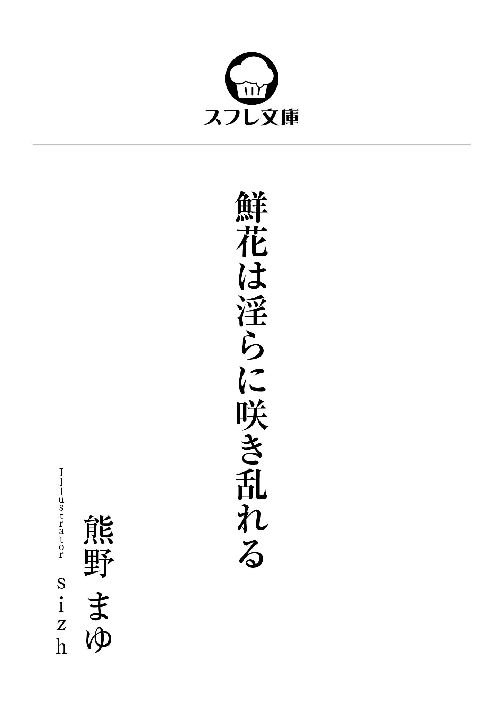
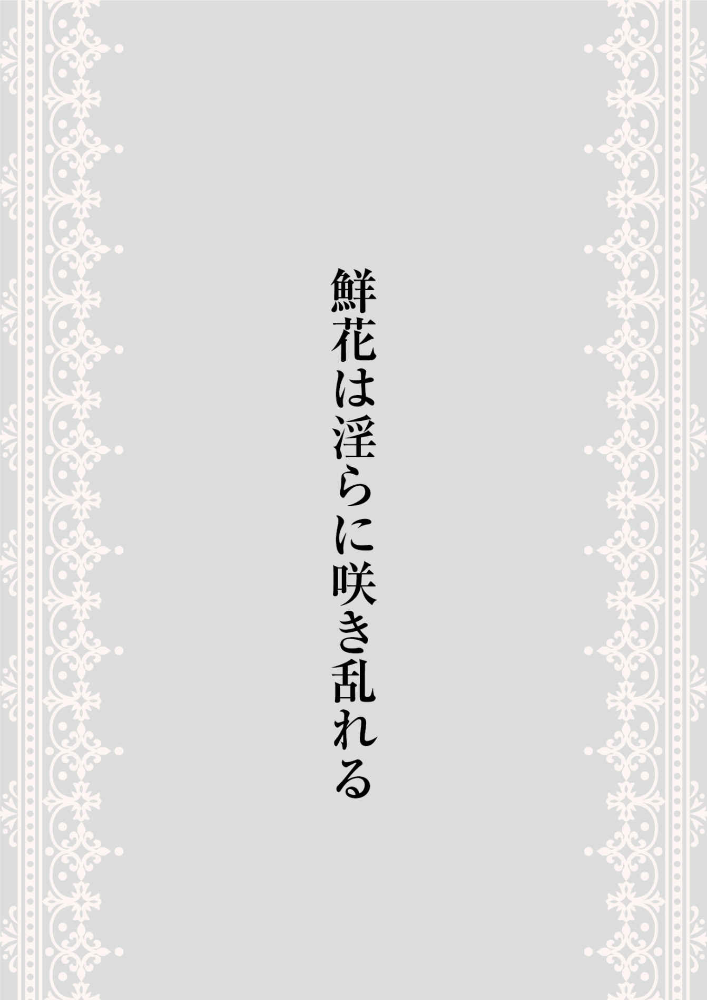
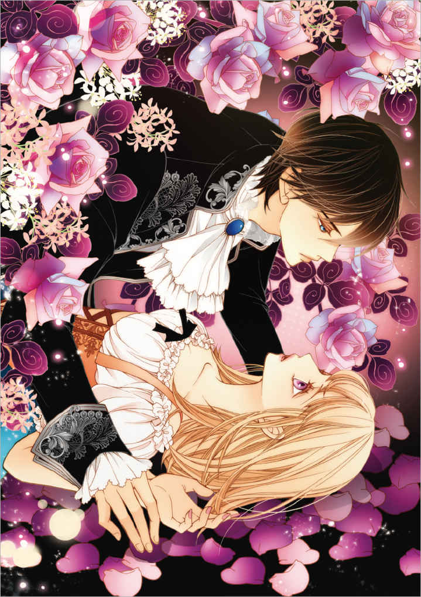

| 【おまけ付き】鮮花は淫らに咲き乱れる (スフレ文庫) | |
| 熊野 まゆ | |
| スターティアラボ株式会社 (2017) | |

本作品の全部または一部を無断で複製、転載、配信、送信したり、ホームページ上に転載することを禁止します。また、本作品の内容を無断で改変、改ざん等を行うことも禁止します。
本作品購入時にご承諾いただいた規約により、有償・無償にかかわらず本作品を第三者に譲渡することはできません。
本作品は縦書きでレイアウトされています。
また、ご覧になるリーディングシステムにより、表示の差が認められることがあります。

フェリックス・オースティン、サルナンド子爵はトランノース伯爵邸の応接間で、その碧い瞳をいぶかしげに細めた。
この商談は私的なものだから、執務を終えてから商人を相手にすることにした。したがっていまは真夜中だ。
今宵は美しい満月。しかし、中天にかかる月をのんきに眺めているいとまはない。フェリックスは商人に向かって単刀直入に訊く。
「これが、例のものか？」
「左様でございます」
フェリックスの向かいのソファに座る商人はおもむろにうなずいた。
「この花が咲くには、淫欲さが必要でございます」
フェリックスの視線が商人からテーブルへと移る。ローテーブルの上に置かれた花が入れられている陶器は白く、装飾はいっさいない。どこにでもあるような器だ。その植物の茎と葉は緑。花弁は固く閉ざされているものの、うっすらと内側の色がにじみ出ている。咲けばおそらく紫色だろう。恋い焦がれてやまない彼女の瞳と同じような色彩に違いない。
見たところなんの変哲もない、ただの花。まだ開いていない、つぼみ。強いて言えば、葉の形がほかでは類を見ないという程度。
（だがこれは......きっときっかけになる）
フェリックスはごくりと喉を鳴らした。
この国の――いや、この世界と言うべきか。植物ならば生きとし生けるものすべて、持ち主の感情を反映して育つ。持ち主の気が沈んでいれば花はしおれる。反して、元気でさえいれば花はいつまでも枯れない。
フェリックスはとある花屋の笑顔を頭の中に浮かべた。
――彼女はもう適齢期だ。快活で笑顔の絶えない彼女は、永遠に少女のままではない。ここのところいっそう女性らしく、妖艶さすら兼ね備えてきた彼女をこれ以上放ってはおけない。
純真無垢な彼女に嫌われたくなくて――自分自身も傷つきたくなくて、いままでなかなか踏み出せなかったが、そろそろ我慢の限界だ。ここのところ彼女にまとわりつく悪い虫をたびたび見かける。
（彼女を......俺のものにする）
フェリックスは意を決した。
「よし、買い取ろう」
「ありがとうございます！」
満面の笑みになった商人とは対照的に、フェリックスは少しも表情を変えずにただじいっとつぼみを見つめていた。
――花屋たるもの、元気でいなければ。
赤煉瓦造りの店が軒を連ねる大通り。その角に位置するこの場所は立地としてはかなりよい。だからきっと、両親が亡くなって代替わりしたいまでも繁盛しているのだと思う。
『フラワー・ユマ』は今日も朝から客足が絶えない。
「いらっしゃいませ！ おはようございますっ」
所狭しと花々が並べられた店内にパンジー・アシュレイの快活な声がこだまする。
つぼみがほころんだようなパンジーの笑顔を一目見ようと老若男女問わず店に花を買いに来ているのだということに、鈍感な彼女は気がついていない。
「今日もお店の花は元気だねぇ。安心したよ」
「ふふっ、ありがとう！ エレナおばさん」
常連客の一人である、三軒となりで洋装店を営なむエレナは「うん、うん」と満足げにうなずきながら店の花を見渡した。
花々は持ち主であるパンジーの心を色濃く映し、元気に咲き誇っている。
「さて、今日はどの花にしようかねぇ」
エレナは腕組みをして、切り花を物色し始める。そうしているあいだにまた別の客がやってくる。パンジーは「いらっしゃいませ！」と何度も言いながら今日も忙しなく働くのである。
「ふう......」
夕方になるとさすがに客足が遠のく。
エレナの洋装店しかり果物店やパン屋など、この大通りにある店は夕方には店を閉める。それは『フラワー・ユマ』も同じである。
カランコロン、と玄関扉の鈴が鳴った。
「ああ、ジョージ。いらっしゃい」
「やあ、パンジー。今日も元気そうだね」
店の中に入って来たのは大通りから少し外れた酒屋の店員、ジョージだ。酒屋は夕方からが書き入れ時なので、彼はこうして夕方に訪ねてくることが多い。
「ねえ、パンジー。そろそろ俺と結婚してよ。おまえ、もう十八だろう？」
「またまた、ジョージったら。今日も酔っ払ってるの？」
パンジーは笑顔でそう返し、「今日はこれなんてどう？」とジョージに花を勧める。
「ちぇっ、あいかわらずそれかよ......」
ジョージは唇を尖らせて、ぶっきらぼうに「じゃあソレ」と赤い切り花を指差す。
「お買い上げありがとうございます！ 酒屋のご主人によろしくね」
パンジーは赤い切り花を手早く包装してジョージに渡した。
「じゃ、また明日な」
「うん。ありがとうございましたーっ！」
不機嫌な顔のまま店を出て行くジョージに手を振るパンジーだが、入れ違いで店の中に入って来た男を見るなりその手はピタリと動きを止めた。
「い、いらっしゃいませ！」
どきどきと高鳴る胸を何とかして落ち着かせながらパンジーは微笑む。
「彼は......また来ていたのか」
銀の刺繍が入った黒いジャケットに濃紺のクラヴァットを締めた長身のその男は、店を出て行ったジョージをどこか忌々しげに一瞥した。
――彼の名はフェリックス・オースティン。トランノース伯爵の嫡男で、いまはサルナンド子爵を名乗る由緒正しき貴族である。
パンジーはほんのりと頬を赤く染めてフェリックスを盗み見た。彼のほうは、店の花をぐるりと見まわしている。
（......フェリックスさま）
毛先に少しクセのある漆黒の髪は触れればきっとなめらかだ。碧い瞳はさながらサファイア。そんな高価な宝石は店先でしか見たことがないが、手に入らないという意味では彼もまた宝石のようなものである。
貴族である彼と初めて会ったのはまだ幼いときだ。両親が花屋を営んでいたころ、トランノース伯爵が領地視察の一環でここを訪れた。そのとき、幼きフェリックスも一緒だったのだ。伯爵が現地現物主義でなければきっとフェリックスと出会うことはなかっただろう。
だからパンジーはいまでもその縁に感謝している。それ以来、フェリックスはときおりこの店を訪ねて来てくれるのだ。おそらく領地視察を彼の父――トランノース伯爵から言いつかってのことだと思うが、彼はほかに兄妹がいなかったパンジーのいい話し相手になってくれた。フェリックスは口数は少ないが、話しかければ必ず答えてくれる。年齢が七つほど離れているから、兄のような存在だ。
「......今日もきれいだ」
唐突に言われ、パンジーは目を白黒させる。つい彼に見とれてしまっていたから、なにか聞き逃しがあったのかもしれない。
「は、はいっ！ 今日もお花たちはきれいです！」
パンジーがあわててそう答えると、フェリックスはそっぽを向いて窓のほうへ行ってしまった。
（......もしかしてまだ、ご心配をお掛けしてる？）
パンジーの両親が流行り病で亡くなってから三年が経つ。
当時、両親を失ったパンジーの絶望を映し、店の花はすべて枯れ絶えてしまった。
悲しみに打ちひしがれて、枯れた花の中にうずくまっていたパンジーを救ったのは、ほかでもないフェリックスだ。彼は気落ちしたパンジーのもとへ足繁く通い、私財で花を集めて店を再開させてくれた。そのときの借金は、彼の厚意で毎月少しずつ返している。しかしそれも、あとわずか。借金を返し終えたら、いよいよ彼との接点がなくなってしまう――。
（フェリックスさまは、借金がなくなってもお店に来てくれるかな？）
そもそも貴族である彼がこの店を訪ねてくるというだけで奇跡のようなものだ。
フェリックスとまみえることができるのは、彼が住む伯爵邸へ借りたお金を返しに行くとき。それから、フェリックスが花を買いに店を訪ねてくるとき。
どちらも、貴族ならば普通は使用人に任せるようなことだ。それをわざわざ本人が行なっているということは、いまだに彼に心配を掛けているとしか思えない。
「あの、私は元気ですので！」
「......ああ。花を見ればわかる」
「そう......ですよね」
フェリックスはたいてい無表情だ。笑っている顔はほとんど見たことがない。
（なにか......会話、会話を）
せっかくお店に来てくれたのだから、会話を弾ませて少しでも楽しんでもらいたい。そう思うのに、考えれば考えるほど話題は浮かんでこない。
（......フェリックスさまと私では、共通の話題なんてない）
かたや貴族、かたやしがない花屋だ。住む世界が違いすぎる。パンジーが彼への恋慕をおおやけにする日は永遠にこないだろう。
（分はわきまえてる。だから、せめて楽しくお話ししたいのに）
楽しい話題を提供できないことに自己嫌悪していると、
「今日はきみに咲かせてもらいたい花があって、来た」
店の窓のカーテンを片手で勢いよく閉めながらフェリックスが言った。彼のもう片方の手には、茶色い籠。ふだんは手荷物を持たない彼だから、少々気にはなっていた。
フェリックスが玄関扉の内鍵を掛ける。その行動にパンジーは驚いた。
もう店を閉める時間だから問題はないのだけれど――なぜ、彼が鍵を掛けるのだろう。そうしたら、彼も店の外へ出られなくなってしまうのに。
カーテンが閉まった窓は西日を通さない。ゆえに、店の中は薄暗い。ランプにはまだ明かりを灯していなかった。
パンジーが近くの棚からマッチを取り出すと、彼女の次の行動を見越してフェリックスが制する。
「ランプに火は要らない」
「え......？」
彼が、ツカツカと一直線に歩いてくる。
（......？ 何だか、いつもとご様子が違うような）
パンジーの目の前にあるカウンターの上に籠を置き、フェリックスはその中から鉢を取り出した。
パンジーは薄暗い店内で目を凝らす。
「これ、は......見たことのない花です」
「そうだろうな。外来種だ」
茎や葉、閉ざされた花弁の色はとりわけ珍しいものではない。しかし、こんな葉の形はいまだかつて見たことがない。
その花の葉は正円だった。しかも葉脈はぐるぐると渦を巻いている。
パンジーはフェリックスが持ち込んだ花をあらゆる角度から見分した。
「これは......どんな花が咲くのか楽しみですね。花開くまで、責任を持ってお預かりいたします」
すると、フェリックスの秀麗な黒い眉がピクリと動いた。
「――いまのきみでは、その花を咲かせることはできない」
うなるような――腹の底に響く低い声で告げられ、パンジーは笑顔のまましばし呆然とする。
「え、ええと......？ それは、なぜでしょうか」
たいていの植物は持ち主が元気でさえいれば美しく花開いてくれる。現に、この店の花がそうだ。
（この......外来種の花は、元気なだけではだめなの？）
パンジーは仕草にこそ現れていないものの、頭を抱えた。
――では、どうすれば花を咲かせることができるのだろう？
表情を曇らせて思案するパンジーをフェリックスはしばらく黙って見下ろしていた。
「......これは淫欲の花だ」
パンジーはフェリックスの言葉をおうむ返しする。
「いんよく――......淫、欲!?
」
パンジーの頬に、瞬時に朱が灯る。
「そ、それは、ええと......その」
顔を耳まで真っ赤に染め上げてうろたえるパンジーを見てフェリックスはわずかに口角を上げた。
「きみは、一人で淫欲になることができるか？」
「――っ」
パンジーは驚いて顔を上げた。しかしすぐにまたうつむく。フェリックスの目を見ていられなくなったからだ。
――何だかやけに恥ずかしい。
「あ、の......っ、私......そのっ」
「俺が手伝おう」
「......っ!?
そ、そんな......。フェリックスさまに、そんなことをしていただくわけにはいきません」
そうは言ったものの、具体的になにをすれば淫欲を引き出せるのかわからない。それでも、なにか恥ずかしいことをするのだということだけはわかる。
「......俺では不服か」
「いえ、そういうことではなく」
フェリックスは厳しい口調でまくし立ててくる。
「俺になにかされるのは、嫌か」
「でっ、ですから、そうではなくて......！」
パンジーは赤い両頬に手を当てて困り果てた。次の言葉が見つからない。
「......では、決まりだ。その花が咲く手伝いをする。俺が――俺だけが。ほかの男には絶対に手出しさせない」
トクッ、と心臓が跳ねる。
（どうして、そこまでしてくださるの？）
花屋はこの一軒だけではない。パンジーが、この花を咲かせることができないのなら他所へ持ち込めばよいだけの話だ。
（それなのに、フェリックスさまはなぜわざわざご自身の手をわずらってまでこの花を私に――？）
淡い期待に全身が震えた。しかしすぐに自分自身がその期待を否定する。
（私は特別なのかもしれない、なんて......おこがましい）
三年前を回顧する。当時、彼はおそらくノブレス・オブリージュの高潔な精神をもって店の再興を支援してくれたのだ。恩人であり、貴族の鑑とも言うべき崇高な彼に恋心を抱いているというだけでも不届きなことなのに、そんな勝手な期待をするなどもってのほかだ。
（いけない、しっかりしなくちゃ。......そうよ。フェリックスさまは私がどんな花でも咲かせられるように、指導してくださるおつもりなんだ）
パンジーはそうして一人で納得して自身をきつく律した。そのあいだにフェリックスはカウンターをまわり込んですぐそばまで来ていた。
「......パンジー」
名を呼ばれることで脈がさらに早くなった。ドクッ、ドクッとうるさいくらいに心臓が高鳴る。すべては彼の純粋な親切なのだとわかっていても、体は嘘をつけない。胸の高鳴りを、どうすることもできない――。
「......っ」
フェリックスが茶色いカウンターに両手をつく。パンジーは彼に囲い込まれてしまった。
（淫欲......っていうのは）
――どういう状態なのだろう？
頭の中で必死に考える。しかしいくら考えても答えはでない。だから、パンジーは率直に訊いてみることにした。
「私はなにをすればよいのでしょう？」
フェリックスの手が頬に触れる寸前だった。彼の手がピタリと止まる。
「......ありのままでいい」
「え――」
パンジーはパチパチと紫色の目を瞬かせた。
（先ほどフェリックスさまは、いまの私ではだめだとおっしゃったのに。それじゃあ......私にできることはなにもないの？）
それはいくらなんでも怠慢だ。パンジーは意気込む。
「あの、私......精いっぱい頑張りますので、よろしくお願いしますっ」
フェリックスが目を見開く。驚いているような顔になった。彼がいったいなにに驚いたのか、パンジーにはわからない。
フェリックスが浅く呼吸をしたのがわかった。止まっていた彼の手が動きだす。朱を帯びたパンジーの頬に、フェリックスの指先がそっと触れる。
「......柔らかい」
彼の指が頬をすりすりと撫で始める。初めて触れ合ったその指先は少しも柔らかさがなく、ごつごつとしていて雄々しかった。そんな指先が、肌に触れるか触れないかのぎりぎりのところを撫でたどっている。
「く、くすぐったい......です」
パンジーは唇を噛んで目を細めた。恥じらいを含んだその表情は容易にフェリックスの情欲をかき立て、衝動的にさせる。
グンッ、と急に視界が揺らいだ。
「――っ！」
彼に頭をかき抱かれ、手のひらの大きさに圧倒されたのも束の間、目の前が真っ暗になる。
唇と唇が、合わさっている。
「ん、んっ......！」
それを実感して、体感して――めまいを起こしそうになった。
挨拶のそれとはかけ離れた、度を超したキスはとても情熱的で、頭の中がくらくらしてくる。何度も何度も、執拗に唇を食まれる。
パンジーの口がわずかでも開くやいなや、フェリックスはすかさず舌を滑り込ませた。
「ふ――!?
」
口腔に入り込んできたそれの生温かさにまず驚き、それから彼の舌が歯列を舐めたどり始めたことにうろたえる。
「ん......っ、ふ」
麗しすぎる彼の顔が間近にある。鼻息を吹きかけてはいけないような気がして、なるべく呼吸を控えようと思った。
――息苦しい。
ものいわぬパンジーのようすをうかがうためか、フェリックスがいったん唇を離す。
パンジーは口を半開きにして「は、はっ」と息をした。そのようすはフェリックスには淫猥に映る。ふだんは清純で快活なパンジーが頬を赤くして荒く息をするさまは、フェリックスにはひどく淫らに見えたのだ。
「きみは口づけるとそんな顔になるのか」
――どんな顔だろう？
息をするのを我慢して苦しかったから、もしかしたらとんでもなくおかしな顔になっているのかもしれない。
パンジーの顔が耳まで真っ赤になる。フェリックスはパンジーが性的な羞恥で赤くなっているのだと勘違いして、愉しげに眺めて彼女の体に手を添えた。
肩にあった彼の手が、白いフリルネックブラウスをするりと撫で、フロントで編み上げになっているオレンジ色のベストの上をするすると滑り落ちていく。
「ここをこねたらどうなるのか......楽しみだ」
「ぁっ......！」
思わず小さく叫んでしまう。
フェリックスのごつごつとした指先が、ふくらみのいただきをカリカリとこすっている。服の上からとはいえ、その刺激は鮮烈だった。
パンジーは羞恥のあまりぐるぐると目をまわしてしまいそうになった。
「あ、の......！ わ、私はもう、淫欲になれたのでしょうか？」
下半身のよくわからないところがドクドクと脈づいている。こんなことは初めてだ。
フェリックスは短く息を吸い、長く吐き出した。
「いや......まだまだ、だ。とても足りない、これくらいでは」
「......!!
」
オレンジ色のベストの編み上げ紐がほどかれていく。パンジーは呆然とそれを眺めるばかりだった。
「......っ！ フェリックス、さま」
「ん......なんだ」
呼びかけたものの、言葉を発することができない。
そうしているあいだにベストは脱がされ、フリルネックブラウスのボタンも外されてしまった。残るは、シュミーズだけ。このままではフェリックスに肌をさらすことになってしまう。
（恥ずかしいからやめて、だなんて......言えない）
内側にふわりと巻いた金色のセミロングヘアをゆらりと揺らしてパンジーはうつむく。
「......どうした？」
「あ......え、と」
ブラウスとベストの前を開かれ、いままさにシュミーズの前ボタンも外されそうになっている。
「は、恥ずかしくて......その」
うつむいたままパンジーが言うと、
「ではうしろを向くといい」
フェリックスはパンジーの体をなかば強引に回転させた。それからあらためて彼女の胸もとに腕をまわし、シュミーズのボタンを外す。
（これなら、確かに見られはしないけれど......）
彼に背を向けているから、シュミーズの前を開かれても胸は隠せる。しかし、背中にフェリックスの体温をありありと感じる。うしろから抱きしめられているような状態なのだ。
フェリックスは手探りでパンジーのふくらみを両脇からシュミーズごとわしづかみにした。
「あ......っ！」
ボタンが外れてしまったシュミーズからは、そうして揉みしだかれると乳房が外へこぼれ落ちそうになる。
「俺の手におさまる、ちょうどいい大きさだ」
耳もとでつむがれた低い声に、パンジーは総毛立ってさらに肌に熱をこもらせる。
「......じかに触れていいか」
パンジーは息をのむ。胸は生地ごとぐにゃぐにゃと揉みまわされ、シュミーズはしわくちゃになってしまった。
「どうなんだ、パンジー」
「......っ、ふ」
口に手を当ててパンジーは目を伏せた。
（フェリックスさまは、私のためにしてくださってるんだから――）
むしろ「お願いします」と言うべきなのかもしれない。
（でも......。じかに胸をさわって、だなんて......！ 恥ずかしくて、言えない）
いやしかし――と悩みに悩んだ挙句、
「わかりません......！」
切羽詰まってそう口にすると、フェリックスは「ふう」と長くため息をついた。
「それはいささか卑怯な答えだ」
あきれているような声音とともに、彼の指先が妖しく動いた。ふくらみに引っ掛かっていただけのシュミーズを、無骨な指先が左右に割る。
パンジーが反射的に胸を隠そうとすると、それよりも早くフェリックスが乳房をつかんだ。
「や、ぁっ......！」
彼の手のひらはつめたい。自分の体が火照っているせいでそう感じるのかもしれない。
つかんだ乳房を持ち上げるようにしてフェリックスは双乳をゆさゆさと揺らし、その感触を確かめる。
「手に吸い付くようだ......。柔らかく、温かく、瑞々しい」
頭上から降ってきた声はいつになく甘い。
フェリックスは手のひらでパンジーのまろやかさを堪能しながら、彼女の首すじにちゅっ、ちゅっと口づけていく。
「んっ、ん......！」
唇が首に触れるたびにパンジーは肩をビクンッと跳ねさせた。そうして体が跳ねることでふくらみが揺れ、フェリックスをさらに煽る。
「きみは感じやすいのか？ 口づけるだけで体を小刻みに揺らして――淫らに俺を誘う」
「そっ......、な......！ すみませ、ん」
体を揺らしてはいけないのだと思い、パンジーはカウンターに両手をついて自身を支えた。こうすれば少しは体勢が安定する。
「......俺がさわりやすいようにしたのか」
パンジーはバッと顔を上げて彼のほうを振り向く。しかしすぐにまた顔を前に戻した。うしろを向いたら、胸が丸見えになってしまうからだ。
「......きみは意外と性に積極的だな」
ポツリとひとりごとのように言われ、頬にさらなる熱がこもる。
「わ、私......そのっ......」
「責めているわけではない。褒めているんだ」
「ん、うぅっ......」
穴があったら入りたい。けれど店の中には穴なんてないし、フェリックスにうしろから強く抱きしめられているからほとんど身動きがとれない。
（でも......そうよ。この花を咲かせるには淫らでなければいけないのだから）
パンジーはカウンターの端にあるつぼみを見やった。そのまま、ふと視線を横に走らせる。
切り花がおさめられているガラスケースに映ったフェリックスと、目が合った。その瞬間、彼の碧い瞳がわずかに見開かれた。
「......気づいてしまったか」
残念そうに言い、フェリックスがこうべを垂れる。
（もしかして、ずっと見られて――......!?
）
ガラスケースには、乳房を揉みしだかれて真っ赤になっている自分自身が映り込んでいる。
「――そういうわけだから、もっとよく見せろ。きみのすべてを」
フェリックスはカウンターの上に身を乗り出すのと同時にパンジーの体を乳房ごと力強く引き寄せた。
「は、ぅっ！」
体をうしろに引かれたことで妙な声が出てしまった。
「うぅ......」
恥じらう事柄が多すぎて、むしろ羞恥心というものが麻痺してくる。いまだって、フェリックスが頭上から顔と胸をのぞき込んでいる。見られているところを隠してしまいたいけれど、顔はフェリックスのそれがすぐそばにあるし、胸は彼にわしづかみにされたままなので手で覆ったところであまり意味がない。もうお手上げだ。
「観念して俺にすべてさらけ出せ」
フェリックスはパンジーの顔と胸を熱心に見つめ、ふくらみの色づいた部分に指をかける。
「......っ！ ぁ、ん......！」
とたんに、自分のものとは思えない甘い声が口から出てきた。パンジーは目を見張り、そしてあせる。
（な、なに？ いまの声）
妙な声が出た口を手で覆う。しかし口を押さえたところで声は隠せない。
フェリックスの指先がまたわずかに動いて、薄桃色をひと撫でした。
「ふぁっ......！」
瞬時にぞくぞくっと全身がわなないた。甘い疼きが手足の先までひた走り、快いしびれを残す。
（私ったら、また......！）
パンジーは今度は両手を使って口を押さえた。唇が開かないよう、手で必死に口を塞ぐ。
そんなパンジーをフェリックスは口の端を上げて見下ろし、鮮やかなピンク色の乳輪を指の先ですりすりとこすった。
「んんんっ......！」
「ああ......薄桃色の棘が勃ってきた」
「と、とげ......？」
フェリックスがどこを示しているのかわからずパンジーは首を傾げる。
（花の棘は店先に並べる前にすべて取り去ったはずだけれど......）
パンジーは的外れな考えを巡らせる。
「俺が言っているのはここのことだ」
フェリックスの指が押し上げたのは、まだ快楽を知らぬ薄桃色の棘。
「ひぁ、あっ！」
乳頭を指でつんっと弾かれて思いがけず叫んでしまったあとで、パンジーは口を手のひらで覆い隠した。
「俺に嬌声を聞かれるのはそんなに嫌か？」
「そ......だ、って」
――なにをおいてもとにかく恥ずかしい。
パンジーはふるふると小さく首を横に振った。
「俺は聞きたくてたまらない......。ふだんは清純なきみが乱れてよがる声を」
パンジーの耳の中に吹き込むようにフェリックスは言葉をつむぎ、それから耳たぶを甘噛みした。常日頃は決しておしゃべりではない彼が、今日はやけに饒舌だ。
お互いが、いまは常とは違うと認識している。見慣れた店内までもが、日常とはかけ離れた場所のように思えてくる。
「......んぁっ！」
指先で乳頭をくすぐられる。硬く尖ったそこをほぐすように、フェリックスは丁寧に指を動かして色づいた部分を柔肉へと撫でつける。
「どれだけ指でいじっても硬いままだ、きみのここは。これがどういうことか、わかるか？」
パンジーはまたしても首を横に振る。わかりません、と答えたい。けれど、喘ぎ声を抑えるだけで精いっぱいだった。
「興奮していきり立っているんだ、きみの乳頭は。......じつに愛らしい」
「ん、あぁっ！」
二本の指でふくらみの先端をつまみ上げられる。そうなるといよいよ、はしたない声を抑えることができなくなった。
「ぁ、あっ......！ ん、ぁぅっ」
初めて覚える快感に、パンジーはたやすくはまり込んでしまう。彼の指が乳頭を引っ張り上げるたびに、下半身を中心に心地よい疼きが全身を駆け巡る。パンジーは無意識のうちに腰を揺り動かしていた。それを視認したフェリックスが、パンジーが身に着けているスウェード生地の紅いプリーツスカートの裾をつまんだ。ちょうどそのとき、ボーン......と古ぼけた音を響かせて店の柱時計が鳴った。彼の手がピクリと小さく跳ねて静止する。
「......今日はこれくらいにしておこう」
そう言うなりフェリックスは腕に抱いていたパンジーの体をくるりとまわし、彼女の衣服を整え始めた。
「あ......自分で、できます」
「......いや、俺がする」
「そう......ですか？」
手出し無用、といった雰囲気をかもしだすフェリックスに気圧されて、パンジーはされるがままになる。
（フェリックスさまは......きっとまだ仕事があるのね）
彼はいつも、店に寄ってくれるがすぐに帰ってしまう。店の外に馬車と従者を待たせていて、花を買って二言三言交わしたあとはすぐに立ち去る。店先に見送りに出ると、彼の従者が予定表や仕事の資料とおぼしき羊皮紙を手にして次の行先を確認しているのだ。
（でも今日は、いつもより長く一緒にいられた）
そのことを幸せに思いつつ、彼が下を向いているのをいいことにパンジーはフェリックスの端正な顔を間近でしげしげと眺めた。いっぽうの彼はパンジーの視線には気づかず、ひとりごとのようにぽつりと言う。
「これ以上したら、きみを髄まで味わいたくなる。だから、やめておくんだ。ここでは......最後まではできない」
彼の言葉が耳から耳へと抜けていく。その意味が、いまいちつかめない。
（私......フェリックスさまに求められているの？）
しかしそうだと確かめる勇気はないし、確かめたところでどうなるというのだ。この身分差は決して埋まらない。
パンジーは気持ちを切り替えて、ひとまず礼を述べることにした。
「あ、あの......ありがとうございました。私のために貴重なお時間を割いていただいて」
パンジーの服をもとに戻すと、フェリックスはすぐに彼女から離れた。
「......いや、気にするな」
先ほどまでの饒舌さはどこへやら、フェリックスはまたいつもの硬い雰囲気に戻ってしまった。そのことを少し寂しく思う自分自身に、パンジーは驚くのと同時に物悲しくなった。
「ねぇ、おはなをあげる。だから、げんきをだして？」
トランノース伯爵邸の私室でフェリックス・オースティンは目を覚ました。あたりはまだ薄暗い。夜明けには程遠い。
フェリックスはふたたび瞳を閉ざした。夢の続きを見ることができるよう、願いを込めてみるものの、そううまくはいかない。頭は完全に冴えてしまった。
キングサイズのベッドからのそりと起き上がり、フェリックスは窓ぎわまで歩くと、カーテンを開け、まだ明けぬ空を眺める。
（パンジーはあのころから少しも変わらない）
純粋で、無垢で。穢れを知らず、他人を元気にすることばかり考えている。
いましがた夢に見ていたのは彼女と出会ったころのことだ。フェリックスはかつて、伯爵領主である父親に連れられて、パンジーの両親が営む花屋を訪ねたことがあった。
（あのときの俺はきっと死んだ魚のような目をしていたに違いない）
幼いパンジーにはそれがよくわかったのだろう。だから彼女は、「げんきをだして」と言って店の花をくれたのだ。
（彼女の笑顔はいまでも脳裏に焼き付いている――）
いまでも鮮明に思い出すことができる。屈託のないパンジーの笑顔を。その笑顔が、いまやつぼみの頃を過ぎて甘く艶やかな女性らしさを思わせる大輪の花をたたえている。パンジーの微笑みに欲情してしまうのは、彼女が魅力的すぎるせいだ。
（彼女はいまも昔も、俺の癒しだ）
暇を見ては『フラワー・ユマ』へ足を運んだ。そうしてパンジーと会って話をするうちに、どんどん彼女のことが好きになった。
（だが......パンジーは俺がいくら容姿を褒めても花のことだと勘違いする）
明るくて元気なところが好きだ、とはっきり言えばよいのかもしれないが、次期伯爵領主として厳しく教育されてきたせいか、なかなか本音が言えないひねくれた性格になってしまった。
――俺は彼女を手折りたいわけではない。
（愛でたいんだ、ひたすらに）
今日はパンジーが伯爵邸にやってくる日だ。彼女があまりにも待ち遠しくて早くに目が覚めてしまったのかもしれない。
パンジーの店を再興するのに使った金の返済など、本当はどうでもいい。しかし、そんな名目でもなければパンジーとたびたび会うことはできない。そんな自分を不甲斐なく思ういっぽうで、気がはやる。
――早く、会いたい。
パンジー・アシュレイはいつも以上にどきどきと胸を高鳴らせながら伯爵邸の前にいた。
（ふだんどおりにしなくちゃ......）
しかしそう思えば思うほど、緊張感が高まる。彼と話をするだけでいつもにわかに緊張していたものだから、よけいにそうだ。
フェリックスと会うのは、あの日以来。
彼に、『淫欲になるため』のいろいろなことをされて以来だ。
伯爵邸の大門をくぐり敷地の中へ入る。邸の門番とは顔見知りなので、すんなり通ることができる。
深みのある茶色い玄関扉のドアノッカーを鳴らすと、中から邸のメイドが出てきて応接間へと案内してくれる。
「......えっ？ ここ、ですか？」
「はい。こちらにお通しするようにと言いつかっております」
メイドに案内されたのはいつもの応接間ではなかった。邸の奥まったところにある――おそらく、フェリックスの私室だ。
メイドがドア越しにパンジーの訪問を告げると、中からすぐに「入れ」という声がした。
「失礼、します」
メイドが開けた扉から中へ入る。そこはやはりフェリックスの私室だった。彼は執務服だったが、大きなベッドや落ち着いた風合いのソファが置かれたここは明らかにプライベートルームだ。
フェリックスはメイドに「下がっていい」と指示を出す。部屋にはあらかじめティーワゴンが置かれていた。
「掛けてくれ」
ソファに座るよううながされたが、彼のほうはティーワゴンの前に立ったままだ。
（もしかして、お茶を淹れてくださろうとしている？）
茶を淹れるつもりならなぜメイドを下がらせたのだろうと思いながらもパンジーは、
「お茶でしたら私が」
と言いフェリックスのとなりに立った。彼の表情は相変わらず硬い。
「き、今日は......いいお天気ですね」
「......そうだな」
いつもは応接室でメイドが淹れた茶を飲みながら少しだけ話をしてすぐに帰る。その際メイドは給仕のためにずっと応接間にいるので、こうしてふたりきりになることはない。
（ふたりっきり......。しかも、フェリックスさまの私室で）
先ほどから心臓はバクバクと高鳴りっぱなしだ。このまま壊れてしまってもおかしくない。そんな気がする。
緊張のあまりティーポットを落としてしまわないか心配だったが、何とか無事に紅茶を淹れることができた。
紅茶のカップをソファの前のローテーブルに二つ並べて置き、それにならって二人もソファに横並びになる。パンジーは紅茶を飲む前にスカートのポケットから封筒を取り出し、フェリックスに差し出した。
パンジーから受け取った封筒をローテーブルの端に置きながらフェリックスは言う。
「きみに預けた花は、どうだ？」
返答に、少しばかり困った。しかし正直に答えるよりほかない。
「まだ......咲きません」
彼が静かに紅茶をすする。その紅茶が彼の口に合ったのか、あるいは喉が渇いていたのか、フェリックスはティーカップの茶を一気に飲み干した。
「――では、まだ足りないということだな」
なにが、とは訊かずともわかる。ドクッ、といっそう跳ね上がった心臓に、パンジーはくらくらとめまいさえ覚えながらフェリックスのようすをうかがう。
「あれから......だれともそういうことはしていないな？」
「し、していません」
頬を赤く染めてうつむくパンジーにフェリックスは手を伸ばす。その手が彼女の頬に触れると、パンジーはピクッと小刻みに肩を揺らした。
「ひとりですることもなかったか？」
「あ、ありません......！」
「ならばよい」
そうしてニッと微笑むフェリックスの顔を目の当たりにしたパンジーはいよいよ卒倒してしまいそうになった。彼の笑顔がまぶしくて、いつも以上に素敵で。無性に想いを伝えたくなった。しかし踏みとどまる。この想いは秘めていなければ――。
「......夜はよく眠れているか？」
フェリックスの指先がパンジーの目もとをそっと撫でる。パンジーはすぐに「はい」と返事をしたものの、ここのところあまりよく眠ることができないというのが本音だった。
（フェリックスさまのことを思い出すと眠れなくなる、なんて......言えない）
彼のせいで寝不足だ、などとは絶対に言えない。しかしほかに寝不足の理由が思いつかないので、つい嘘をついてしまった。フェリックスはいぶかしげにパンジーの目の下を指でたどる。
（クマでもできているのかしら？）
こんなことなら鏡できちんと自分の顔を確認してくればよかった。髪の毛や服は、おかしなところがないか見てきたが、目もとまでは考えが及ばなかった。
あれこれと逡巡するパンジーの頬をフェリックスの指先が滑り落ち、口もとに達する。そのまま唇を撫でて顎をつかむ。
パンジーは予感する。つい先日の経験にもとづく、口づけの予感。
美しく整った彼の顔が近づいてくる。見とれているいとまもなく、唇に唇が押し重なった。
「ふ......」
鼻から抜ける息と、漏れ出てしまう甘い声にはいまだに慣れなくて、どうしてそんなふうになってしまうのだろうと思う。
「っ、......ん!?
」
唇同士を合わせているだけでも精いっぱいだというのに、彼の手がふくらみに添ってなまめかしく動き始めたのだ。パンジーは驚いて目を見開く。
フェリックスはパンジーの口腔に舌を滑り込ませながら彼女のふくらみを両手で揉みまわした。
「ん、んぅっ......！」
彼の熱い舌と大きな手のひらが、口腔と乳房を激しく揺さぶる。脇腹のあたりがぞくぞくとわななき、下半身の奥底が甘く震えてくる。
「その顔......たまらないな」
ほんの少しだけ唇を離してそう言葉を紡いだかと思えば、フェリックスは性急な手つきでパンジーの衣服を乱し始めた。
「あ......っ！ フェリックス、さま」
彼の名を呼んだところでなにが変わるわけでもなく、フェリックスはパンジーの服を手際よくどんどん脱がせていく。そのあいだも唇をついばまれ、息が上がっていく。
「前に一度さらけ出してしまったんだから、いまさらだろう？」
なだめるようにそう言われても、やはり抵抗してしまう。ベストとブラウス、それからシュミーズの前を開かれて無防備になってしまった胸をパンジーは両手で押さえていた。
「――もっとも、俺はいつ見てもそそられるが」
つぶやきながらフェリックスはパンジーの両手首をつかんで左右に開く。ふるりとなまめかしく揺れた乳房をじっくりと見つめ、フェリックスはそこに顔を寄せた。
「――!?
フェリックスさま、あの......っ！」
「......なんだ？」
なにを驚いているんだ、とでも言いたげにフェリックスは上目遣いでパンジーを見上げる。
「は、恥ずかしいので......そんな、近くでは......！」
彼の口もとがゆるむ。
「恥じることはない。きみのふくらみは美しく、先端は芽吹いたばかりの花のように鮮やかだ」
ふたつのつぼみをそれぞれ指でつままれ、引っ張り上げられる。
「ん、ぁっ！」
フェリックスはつまんだ乳頭をくにくにと指でひねりながら嗤う。
「濡らしたらどんな色に変わるのか......」
――濡らす？ どうやって？
その疑問にはすぐに答えを示されることになる。フェリックスは赤い舌をのぞかせてパンジーのふくらみの先端をツンッとつついた。彼にそうされることがあまりに衝撃的で、パンジーはつい大声を上げてしまった。
「ひぁっ！ ......あ、ぁあっ」
どくっ、どくんとあらぬところが激しく脈づく。自分では触れたこともないそこがヒクヒクとうごめくのがわかった。フェリックスの舌が薄桃色の部分をあますところなく舐めまわす。
「はぅっ、う......あ、アッ！」
身悶えするパンジーのようすをしっかりと観察しながらフェリックスは彼女の乳頭をさんざんに舐めしゃぶった。
「ああ......ますますいい色になった」
「......！」
唾液で湿ったふくらみのいただきはランプの光をてらてらと反射している。フェリックスはそこを人差し指で柔肉へと押し込んだ。
「ぁんっ......！」
なにかされるたびに甘い声が出てしまう。フェリックスがそれを愉しんでいるとは知らずパンジーは口を押えて目を伏せた。
「パンジー」
甘さを帯びたかすれ声で名を呼ばれ、それだけで胸がいっぱいになる。なにもかもがとろけだしてしまうのではないかと思う。
「もっと......いろんなきみを知りたい」
フェリックスは深く息を吐きながらそう言った。
（私のことを、知りたい......？）
それはどういう意味なのだろう。
（彼は私のことをどう思っているの？）
この行為は淫欲の花を咲かせるためのもの。それ以外の理由は存在しないはず。
そう自分に言い聞かせることでパンジーは自制心を保った。彼の愛撫に溺れて「愛している」と叫んでしまわないよう、自身を律する。
――でも、もし彼も私を好いてくれているとしたら？
そうしたら、結婚はできないにしても愛人くらいには――。
（私、なにを考えているの！）
彼はいずれ然るべき貴族令嬢と結婚する。その足枷になるような存在に、自分がなっていいはずがない。恩を仇で返す行為だ。
「......どうかしたか」
すっかり意気消沈してしまったパンジーをフェリックスが気遣う。
「い、いいえ......」
――よけいなことを考えてはいけない。
いまはただ、淫欲の花を咲かせることだけを考えなくては。
「フェリックスさま......。続けて、ください」
涙ぐんだ瞳でパンジーが言うと、フェリックスは下唇をわずかに震えさせて彼女の乳房をわしづかみにした。箍
が外れたようにその先端を激しく貪る。
「んぁっ、あ......！ ふっ、ぁあ、ぁ......!!
」
じゅっ、じゅぷっと大きな水音が立ち、乳首を吸い上げられる。熱い舌でこれでもかと色づいた先端をなぶられ、恥ずかしい声が次から次へとあふれてしまう。
すっかり凝り固まったパンジーの乳首をフェリックスは執拗に舌でなぶった。なぎ倒す勢いでふくらみのいただきを四方へ小刻みに揺さぶる。
「はんっ、んっ」
それまでいろいろなことを考えていた。けれどいまは、目の前のことしか考えられない。小刻みに角度を変えながら乳頭を舐めしゃぶり、もう片方のそれは指でつまんでこねくりまわすフェリックスのことだけで頭がいっぱいだ。
仕上げだと言わんばかりにレロリと舌全体を使って薄桃色の艶めく棘を舐め上げたあと、フェリックスは片手をパンジーのスカートの中へと忍ばせた。
頭の中がぼんやりと霞がかっているようだった。だから、彼の手がドロワーズを引き下ろして初めてハッとして我に返った。
「フェリックスさま......！」
咎めるような調子で名を呼んでも、彼は気にも留めずパンジーのドロワーズを足先から抜けさせてしまう。
秘めるべきところが、すべて露わになってしまった。壮絶な羞恥に見舞われたパンジーは脚を固く閉じ、胸を両手で覆ってひた隠す。
「......いまさらだ」
低いかすれ声だった。フェリックスはパンジーの両手首をそっと、しかし力強くつかむ。
「きみが淫欲に溺れなければ、花は咲かない」
とどめのようにそう言われ、パンジーは下唇を噛む。
（そうだけれど......でも......！）
真昼間から――まして、こんなにも明るいところで体をまじまじと見つめられるのはやはり恥ずかしい。顔から火が出るか、あるいは自身の熱でのぼせて倒れてしまいそうだ。いまだかつて経験したことのない羞恥心が際限なく込み上げてくる。
フェリックスは手にしていた細い手首をゆっくりと左右に開く。
「この腕と同じように脚も開け」
「......！」
何て酷なことを言うのだろう。そんなふうに命令されては抗えない。
（これは――私のため。それはわかっているけれど）
――自分から脚を開いて、そこを見せるなんて！
パンジーはしどろもどろしながら言い訳をする。
「フェリックスさまにお見せできるようなものでは、ありませんので......！ どうか......ご覧にならないで、ください」
乳房をさらし、頬を真っ赤に染め上げてうつむき加減にそう言うパンジーは、フェリックスの目には誘っているようにしか映らない。
「――いやだ」
フェリックスはソファに座るパンジーの太ももに強引に手を差し入れて押し開いた。
「あっ......！」
スカートを引き下げてそこを隠そうとするものの、それよりも早くフェリックスがスカートの裾を腰のあたりまでめくり上げる。自身の陰毛が目に入り、瞬時にカッと耳まで熱がこもる。
パンジーの乳房の片方をわしづかみにしたままフェリックスは右手で和毛を一直線に下へ撫でた。
「ふぁっ!?
」
体の中心から先端までをなにかが駆け抜けた。それの正体はよくわからない。しかし、快感の類には違いない。
「いい声を出すようになってきた。その調子だ」
そうして褒められても、どう反応すればよいのかわからなかった。彼の、あまり目にすることのない薄ら笑いにどきどきと心臓を跳ねさせる。もううつむくしかない。彼の顔を見ていられない――。
「......俺を見ろ」
――どうして、羞恥心を煽るようなことばかり命令してくるの？
パンジーはごくりと喉を鳴らした。よけいな疑問は呑み込んでしまおう。恩人に向かってそんな不躾な質問はできない。
ゆっくりと顔を上げてフェリックスを見る。いつ見ても彼は麗しい。けれどいまは、その碧い瞳に情欲の火を灯しているような気がした。彼の瞳に映る自分は、いまにも泣き出しそうな顔をしている。
「俺はきみをいじめたいわけじゃない」
弁明するようにそう言われた。パンジーはすぐに答える。
「それは、わかっております」
――すべては淫欲の花を開かせるために。
「......理解してくれているのなら、よい」
フェリックスの、その安心するような声音はパンジーにはかえって酷だった。
（勘違いしてはだめ......）
間違っても、愛されているなどと思ってはいけない――。
パンジーの豊かなふくらみの先端を指で挟んでひねりながらフェリックスは下半身の割れ目を指で慎重に撫でたどった。
「ぁ......！ ん、んぅ......！」
反射的に、脚を閉じて彼の指から逃れようとしてしまう。
「脚は閉じるな。むしろもっと開け。大きく開かれているほうが触りやすい」
「そ......っ」
パンジーは葛藤した。頭の中では「恥ずかしいから脚を閉じろ」と誰かが警鐘さながらに繰り返している。しかし体のほうはフェリックスの言いつけを律儀に守っていて、秘所を隠そうとはしない。頭と体がちぐはぐになって混乱しているところに、彼の指がひたと触れる。
「ひぁあっ!!
」
大声を出したのが自分だとは思えない。フェリックスの指先が触れているそこは、ほんの少し撫でられるだけでそんな大きな声が自然発生してしまう。
フェリックスは無垢な花芽に人差し指を押し当てて、丁寧にそして小刻みに揺さぶる。
「ぁっ......あぁっ！」
そこを揺さぶられるたびに体の奥底から正体不明のなにかが膨れ上がり、そしてそれが胸の先をもツンッとこわばらせる。
パンジーはたまらずソファに背をあずけた。そうしていなければ耐えられない。めくるめく快感が肢体の先端を甘くしびれさせ、どうしようもなくさせる。
「いま、どんな気分だ？」
身悶えするパンジーにフェリックスは容赦なく訊いた。
「わ、わた......し......っ。あ、ぁぅっ！」
彼の人差し指が速さを増す。わずかな面積の突起をすりすりとこすり立てている。
「正直に言うんだ、パンジー」
「ァッ......！」
フェリックスの指先に力がこもる。パンジーの乳頭と淫核をそれぞれ二本の指できゅっとつまみ、答えを急かす。
（正直に言うのは恥ずかしい。でもほかに......言葉が見つからない）
肯定も否定も、逃げに走るごまかしの言葉も思い浮かばない。パンジーは眉根を寄せて目を伏せた。
「......っ、き......気持ちいい......です」
そう言葉をつむいだその一瞬、すべての雑音が消えてしまったような錯覚に陥った。
消え入りそうな声だったとはいえ、満足のいく返答を得たフェリックスはニイッと笑い、花芽をこする指をますます活発にさせた。
「ひゃぅっ！ んっ、んんっ、ぁ......！」
――なにかが、くる。
そう思った次の瞬間には下半身の奥底がビクンビクンと脈を打っていた。パンジーは何度もまばたきをした。自分の身になにが起こったのかわからず、呆然とする。
「きみは絶頂したんだ。俺の指で」
事実を告げてくるフェリックスの声音はいつになく嬉しそうだった。
――私が淫らになっていくから、フェリックスさまは嬉しいのね。
絶頂する、というのはそういうことなのだろう。
（フェリックスさまの手ほどきで、淫欲の花が咲く）
だから彼は喜んでいるのだ。
パンジーは仕事をやり遂げた気分になっていた。『フラワー・ユマ』へ戻ればあの花が咲いているかもしれない。そうなると早く帰ってそれを確かめたい。
フェリックスと離れる名残惜しさはあるものの、もう終わりなのだと思っていた。
「......まだ、帰さない」
その言葉に驚いてパンジーは「えっ」と頓狂な声を上げる。
「あ、あの......でも、フェリックスさまはお忙しいでしょうから」
「今日の仕事は早朝にほとんど片づけた。だから時間は気にしなくていい。......きみのほうは、まだ仕事があるのか？」
「いいえ、今日はもうなにもありません」
フェリックスが碧い双眸をすうっと細める。
「では......続ける」
彼の指先がなまめかしく動きだす。
「ん......！」
花芽のまわりをぐるぐると指で撫でまわしながらフェリックスは言葉を継ぐ。
「まだまだ、このくらいでは到底足りない――」
碧い瞳はいまだに情欲を失っていない。それどころか、初めよりもいっそうぎらぎらと光っているようだった。
「ほら......わかるか？ きみからあふれた蜜がソファを濡らしている」
フェリックスが蜜口のすぐ下を指し示す。革張りのそこはしとどに濡れていた。その部分だけ薄茶色が濃くなっている。パンジーはそれが自分の仕業だと初めて気がつき、あわてる。
「えっ!?
あ......っ。ご、ごめん、なさい......！ ソファ、が」
「いや......ソファは、べつにいい。どれだけ濡らしてもかまわない」
「い、いえ......そんな、わけには」
「いいんだ。きみがよく濡れてくれるほうが、俺にとってはいい」
――彼は何て寛容なのだろう。
（それなのに私は、フェリックスさまにご迷惑ばかりおかけしているわ）
パンジーは恥ずかしさとやるせなさで胸がいっぱいになった。彼がこの行為を心から愉しんでいるとは露知らず、思い悩む。
「......恥ずかしいのか？」
しおれた花のようになってしまったパンジーを見てフェリックスはそう尋ねた。彼女の悩みには気がつかない。
パンジーは言葉を発さずにこくりとうなずいた。
「恥ずべきことなんてなにもない。きみは俺の指に......そう、正しく反応しているだけだ」
慰めとも思える言葉はよけいにパンジーの胸を苦しくさせる。
淫欲の花はもう咲いているかもしれない。だとしたら、この行為は意味を成さない。それを告げるべきか悩んでいると、
「......っ!?
」
フェリックスの指先が、先ほどよりも下方へ押し入った。
「きみのナカに指を沈めるのは俺が初めてだろう？」
問われ、うろたえながら首を縦に振る。するとフェリックスは中指をさらに奥へと進ませた。
「――っぁ、あ！」
すさまじい異物感だった。そこがいったいどうなっているの、よくわからない。わからないがゆえに、恐ろしかった。パンジーは足先をカクカクと震わせる。
「これだけ濡れていれば指を入れても痛くはないはずだ。だから......力を抜け。俺にすべて預けろ」
フェリックスは優しく囁いた。ふだんは不愛想で無口な彼が、自分を気にかけてくれている。そのことが嬉しくて、でもだからといって恋人同士になれたわけではなくて。嬉しさと哀しみに同時に襲われパンジーは瞳を潤ませた。
「......！ 痛むか？」
「――っ、いいえ......」
「では、なぜそんなにつらそうなんだ」
――私、そんなにひどい顔をしているの？
パンジーはあわてて口の端を上げ、無理に笑顔を作った。
「つらくなんて、ありません。しあわせ、です」
恋人同士のそれを疑似体験している。そう思えば、身に余るほど幸運で幸福なことだ。
「......そうか」
ほっとしたようすで、フェリックスは狭道に沈めた指を左右に動かした。
「んんっ......！」
「さすがに狭いな」
フェリックスはパンジーの顔を間近で見つめながら言う。
「いいところがあれば教えろ」
「わ、わからな......っ。あ、ぁあっ！」
彼の指は体の内側を縦横無尽に暴れまわっている。そうして指がうごめくたびに焦りと紙一重の快感がほとばしり、その快感を発散するために絶叫してしまいたくなる。
しかしいまは真昼。この部屋は邸の奥まったところにあるが、廊下には使用人だっているだろう。
「人払いをしておいたから、思いきり声を出していい」
声を抑えようとしていたのがわかったのだろう。タイミングよくそう言われたものの、だからといって大声を出すのははばかられる。だからパンジーは彼の名を呼ぶことにした。
「フェリックスさま......っ！」
名を呼ぶことで愛しさが膨れ上がってしまい、すぐに後悔した。これ以上彼への想いを大きくしてはいけない。自分の中に押しとどめておくことができなくなってしまう。
いっぽうのフェリックスは名を呼ばれたことでさらに指を激しく前後させた。
「ンン......！」
彼の唇が自身のそれに押し重なる。唇を塞がれて嬉しい反面、心も呼吸も苦しくなる。フェリックスの指は蜜奥だけでは飽き足らず、むき出しになっている花核までも、親指でまさぐり始めた。
――吸い込む息が、足りない。
パンジーの頭の中は、しだいに白くぼやけていった。
――元気でいなければ、花屋は成り立たない。
伯爵邸を訪ねた翌日のこと。パンジーはいつものように朝から忙しなく仕事に励んでいた。
（笑顔で、いなければ）
パンジーはそう自分に言い聞かせて、ふだんどおりの笑顔を心掛ける。
「あら、パンジー。なにかあったの？」
「えっ!?
」
常連客であるエレナに指摘され、パンジーはあわてる。
「な、なにもないよ！」
「そうかい？ ちょっと元気がないようだと思ったけど、気のせいかしらね」
そう言いながらエレナは店の花を隅々まで見まわし、「今日はこれをもらっていくよ」と言い淡いピンク色の切り花を買っていった。
（元気よ。私は、元気......）
朝の客が引いたあと、パンジーはぼうっと窓の外を眺めていた。
一人になって、思い出すのは彼のことばかり。フェリックスとの度重なる淫らな戯れにより彼への想いが膨れ上がり、疼く体とは裏腹に心は苦しくなっていく。
パンジーはカウンターの前の丸椅子に座り、窓の外を行く人々を視線だけで追う。そこへ、見覚えのある豪奢な馬車が停まった。パンジーの心臓が瞬時にドクッと跳ねる。
案の定、それはフェリックスが所有する馬車だった。相変わらず不愛想な彼が、店の中へ入ってくる。
「いっ、いらっしゃいませ！」
上ずった声でパンジーが言うと、フェリックスは彼女とは視線を合わせずに店の花に目を向けた。
「その......体の調子はどうだ？」
手持ち無沙汰に首すじをかきながらフェリックスは続けて言う。
「昨日は無理をさせたんじゃないかと、気になって」
パンジーはすぐに首をぶんぶんと横に振った。
「いいえ、元気です！」
「......そうか？」
入口のあたりに突っ立ったままだったフェリックスはゆっくりと歩を進め、カウンターの前まで来た。パンジーの顔をまじまじと見つめる。顔色をうかがっているようにも見える。
彼の手が、伸びてくる。頬に、手を添えられる。触れられたところを核にじわじわと頬が熱くなっていく。パンジーの頬はあっという間に赤く染まった。
クイッとあごを上に向けられる。碧い瞳は何のよどみもなく透き通っている。そんな瞳で見つめられれば、微動だにできない。惹きつけられて、目をそらせない。
「......！」
ちゅっ、と一瞬だけ口づけられた。それは、初めて口にする木の実を小鳥がついばむようだった。
パンジーが嫌がらないからか、フェリックスはさらに二度、三度と唇を押し付けた。口づけはどんどん深くなっていく。
「ふっ......！」
息も絶え絶えのキスになるまではあっという間で、そしてその口づけは永遠を思わせるほど長かった。
すっかり息が上がってしまったパンジーの頬を撫で、フェリックスはどこか哀愁を漂わせて彼女から離れる。
「......また、くる」
そう言い残して、フェリックスは店から出て行った。
パンジーは頬に手を当てて、彼のぬくもりを確かめる。しだいに熱が失われていく。そのことが寂しくてたまらなかった。
――このぬくもりを閉じ込めておけたらいいのに。
彼の手の感触をいつまでも覚えていたいと思った。しかし、人とは忘れる生き物で、いくら思い出そうとしてもそれは叶わない。
いつか必ず終わりはくる。覚えていたくても忘れてしまう――。
カラン、コロンッと音が鳴って、店の扉が勢いよく開いた。
「いらっしゃいませ」
パンジーは玄関扉の鐘が鳴ると反射的にそう言う。やって来たのはジョージだった。
「ジョージ。めずらしいわね、昼間にくるなんて」
「......おまえ、サルナンド子爵とどういう関係なんだ？」
想い人の名を出され、パンジーの頬にふたたび熱がこもる。
「どう、って......。大切なお客さまよ。恩人でもあるわ」
するとジョージはいぶかしげに眉をひそめた。
「ただの客とあんなキスをするんだな。だったら、俺とだってできるよな？」
「――!!
」
パンジーはカウンターの上についていたこぶしにギュッと力を込めた。全身がこわばり、妙な汗が出てくる。
（さっきの......見られていたの!?
）
窓のカーテンは閉まっていなかった。当然、だれの目にも触れる可能性があった。
目に見えてうろたえるパンジーをジョージが問い詰める。
「子爵のことが好きなのか？」
「わ、私は......その......」
煮え切らないようすのパンジーを見て、ジョージはちっと舌打ちをした。
「おまえと子爵じゃ身分が違いすぎる。子爵の足手まといにしかならないぞ。ゆくゆくは領主さまだ。平民のおまえなんかと結婚したら、伯爵家の名が地に落ちるな」
ガツンッ、と何か硬いもの――そう、たとえば花の入った陶器で頭を殴られたような衝撃があった。もちろん本当にそうされたわけではない。そうなれば体はただでは済まない。しかし心は、それと同等に抉られた。
パンジーは涙ぐみながら反論する。
「わ、わかってるわ......！ フェリックスさまと結ばれたいなんて思ってない。身の程はわきまえてる」
早口にそう言うと、ひどく息が切れた。心臓は妙な具合に高鳴っている。健康的なリズムを刻んでいないのではないかと思ってしまう。
「......それなら、いい」
「え、と......どのお花にする？ 今日のおすすめはこれよ」
パンジーは気を取り直して――平静を装って切り花の棚を漁った。
「じゃあ、それ」
ジョージは相変わらず不機嫌で、ぶっきらぼうにそう言った。パンジーから花を受け取り、眉根を寄せたまま「またな」と言い捨てて店を出ていく。
「......ありがとう、ございました」
その日の夜はなかなか寝付くことができなかった。淫欲の花は寝室の枕もとに置いている。円卓に乗ったそれは、もうあとわずかで花開きそうだ。
（この花が咲いたら、フェリックスさまとは――）
渦を巻いた葉は、悶々と思い悩むパンジーの心を映しているようだった。ぐるぐると堂々巡りで悩み、想い、行き着く先はいったいどこなのだろう。
（フェリックス、さま）
彼のことを思い出すだけで胸の奥が締まり、あらぬ場所が疼く。そして、彼の指が秘所をまさぐったときのことまで思い出して、どうしようもなくなってしまう。
パンジーはベッドの中でごろんと寝返りを打ち、掛け布団を頭の上まで引き上げた。だれの目から隠すでもなくそうしたあとで、寝間着の中にそっと手を滑り込ませる。
（たしか......ここ）
脚の付け根の、彼に触れられたところを手で探り当てる。その小さな豆粒をおそるおそる指でつまんでみると、フェリックスにされたときほどではないが確かに快感を覚えた。
パンジーは頭の中だけで何度も彼の名を呼んだ。自分の指を彼のものだと思い込んで妄想する。フェリックスの囁き声を、愉しげに嗤う顔を思い浮かべ、パンジーは想いを発散するように自身を慰めた。
パンジーは茶色い籠を片手に店の裏口から外へ出た。今日は臨時休業しているので、表玄関の鍵はもとから掛かっている。
茶色い籠の中には、フェリックスが店に持ち込んできた淫欲の花が入っている。今朝がた、きれいに花開いているのを確認した。花弁は紫をベースにさまざまな色が入り交ざっている。美しいが――どこか得体の知れないなにかを醸し出している。
徒歩で伯爵邸に着いたパンジーは、門番に用件を言って邸の中に入れてもらった。通された応接間で、邸の使用人に茶色い籠を手渡し、そそくさと退出した。
籠の中には花のほかに、フェリックスから借りていたお金のすべてと、それから手紙を添えていた。
手紙にはいままでの言い尽くせないほどの感謝の気持ちと、それから『もう店にはいらっしゃらないでください』と綴った。
『フラワー・ユマ』に戻ったパンジーは薄暗い店内を見まわした。カーテンは閉め切っていて、ランプにも明かりは灯していない。
（店に来ないで、なんて......失礼極まりないもの。フェリックスさまはきっとご気分を悪くされて、もう本当にお店に来てはくださらない）
それでいい。会うのはつらい。そんな一方的な都合を、彼には押し付けてしまった。
しかし、そうでもしなければ彼に知られてしまう。店の花がすべて枯れかけてしまっているこの惨状を、知られたくはない。
いまにも枯れ絶えてしまいそうなしおれた花々の中でパンジーは膝を折り、その場に泣き崩れた。
パンジーのすすり泣く声が陰鬱な店内に響く。花たちはパンジーとともにますます生命力をなくす。
（淫欲の花だけでも、元気に咲いてくれてよかった......）
そうでなければ、フェリックスの厚意を台無しにしてしまう。
（でも、逆に言えば......いまの私にはそれしかないということね）
そんな自分が心底情けない。花屋たるもの元気でいなければならないのに、いまの自分には身勝手な欲求しか存在しないのだ。
『フラワー・ユマ』がこんな状態なのだとフェリックスが知ったら、もしかしたら彼は自分を責めるかもしれない。
（フェリックスさまのせいでは、ないわ）
すべては、彼の蜜戯に溺れてしまった自分の責任だ。彼は、淫欲の花を咲かせるための手ほどきをしてくれた。それだけだ。
（早く元気にならなくちゃ。落ち込んでる場合じゃ、ない）
パンジーは自身の頬をパンッ、パンッときつく叩いて立ち上がった。元気のない花たちに水をあげるべく、店の裏手にある水道へ向かう。裏路地に面した水道の蛇口をひねり、じょうろに水を満たす。
パンジーは流れ出る水をただ見つめていた。その焦点は一向に定まらない。
「――パンジー」
突然、背後から声をかけられたパンジーはびくりと肩を跳ねさせた。
「あ......ジョージ。どうしたの？」
蛇口をひねって水を止めながら彼を見上げる。ジョージはいつになくいかめしい顔をしていた。
「子爵にふられて欲求不満なんだろ。俺が満たしてやるよ、おまえの欲を」
「――!?
」
突然、腕をつかまれた。ジョージのもう片方の手が腰にまわり、強く引き寄せられる。なにをされるのか予想がついた。
「い、いやっ！」
ジョージの腕を思い切り振り払って何とか逃れる。しかし彼はすぐにまた腕をつかんできた。ふたたび彼の手を払いのけたパンジーは、水道の近くに置いていた土嚢袋をジョージめがけて投げつけた。彼のお腹のあたりに土嚢袋が当たる。
「うわっ！」
大声を出してジョージがよろける。そのあいだにパンジーは店の中へと戻ろうとした。しかし、扉を閉める前にジョージに阻まれてしまった。店の中へは逃げ込めない。
「いやだってば......！」
パンジーは間一髪のところでジョージの手から逃れて駆け出す。裏路地は人気がない。だれかに助けを求めるのは絶望的だ。そうなれば、大通りまで走るしかない。
（嫌......！ 絶対に、イヤ!!
）
だれとでも『ああいう』ことをしたいわけではない。フェリックスでなければいやなのだ。彼の代わりなんていない。
（ああ、私......）
なにがどうなっても、フェリックスのことが好きなのだと改めて自覚した。たとえ彼と結ばれなくても、この想いだけは一生抱えていきたいとも思った。
息を切らしてひた走る。無我夢中で走っているうちに、完全に迷ってしまった。この裏路地はふだんあまり通らない。ゆえに、袋小路になっていることを知らなかった。
パンジーは行き止まりに追い込まれてしまった。夕方は表通りですら人の往来が少なくなる。ましてこんな袋小路の一角をたまたま通りかかる人は皆無だろう。
空はどんよりと曇っていて、陽の光は射さない。陽が落ちればますます暗くなる。パンジーにとって悪い状況ばかりだ。いっぽうジョージにとっては好都合なことばかりだった。喜々としてパンジーに迫る。
石造りの壁が背に当たる。これ以上はうしろへ行けない。
大声で叫べばだれかが気付いてくれるかもしれない。けれど、肝心の声が出ない。手足は震え、走ったせいもあって心臓はバクバクと激しく暴れて呼吸を乱す。
パンジーは声が出せない代わりに首を何度も横に振って否定を示した。しかしジョージは引き下がらない。
「観念して俺のものになれよ」
「......っ、いや」
「おまえには俺くらいがちょうどいいんだよ！」
ジョージの突然の大声に驚いてパンジーは身をすくませる。
「ずっと好きだったんだ。やっとおまえを味わえる」
恍惚とした表情を浮かべるジョージには恐怖しか感じない。
「やっ......！」
両肩をつかまれ、その力強さに小さく悲鳴を上げる。
つかまれた肩が痛い。ジョージはパンジーを石壁に押し付けて顔を寄せた。とっさに顔をそむけて、両手で思い切り彼の胸を押す。しかし、びくともしない。
それでも懸命に抵抗する。手足を動かして必死に暴れる。
「大人しくしろ！」
「ひゃっ！」
抱き込むようにして体を押え込まれ、いよいよ身動きが取れなくなった。
（叫ばなきゃ。助けて、って）
しかしやはり、声が出せない。恐怖で全身が委縮している。絶望に襲われ、涙で視界がぼやける。
（いやだ――！）
パンジーは心の中で絶叫して、現実から逃れるようにぎゅうっと目をつむった。
ゴッ、となにか鈍い音がした。
ジョージに体を拘束されていたはずなのに、いつの間にか自由になっていた。おそるおそる目を開ける。
「は、放せ！」
くぐもった声でジョージが叫ぶ。そこには、ジョージの首根っこをつかんで地面に押さえつけているフェリックスの姿があった。ジョージの両手はフェリックスの執事と思しき男に背中で拘束されている。
なにが起こったのかわからず、しばし呆然とする。
「放せって言ってるだろ！ 何なんだ、いきなり！ 俺はパンジーと愛を囁き合ってただけだ！」
「なっ......！」
パンジーは我に返り、あわてて否定する。
「愛を囁き合ってなんていません！」
「......では、きみはこの男に一方的に迫られていたんだな？」
フェリックスに訊かれ、パンジーはこくこくと何度もうなずく。
「この男を縛り上げろ。強姦未遂罪だ。役所に引き渡せ」
「かしこまりました」
そばに控えていたほかの執事も加わってジョージを押さえにかかると、フェリックスはジョージの首根っこをつかむのをやめてパンジーのもとへ駆け寄った。
「そ、そんな......！ 俺は、そんなつもりは......」
ジョージの顔がみるみるうちに青ざめていく。そんな彼を一瞥しながらフェリックスはパンジーの手を取った。彼女の手はいまだに震えている。
「きみが、この男に追いかけられている姿を表通りからたまたま見かけたんだ。きみの声は聞こえなかったが、この下衆な男の声はよく響いていた」
フェリックスは小さな声で「パンジー」と呼びかけ、表情を曇らせた。
手の震えがいまだにおさまらない。ジョージはうなだれて、執事たちに連れられて仕方なくといったようすでとぼとぼと歩いていった。
「一度きみの店に戻ろう」
提言され、パンジーはあわてて首を横に振る。
「ひ、ひとりで戻れます」
握られている手に、力がこもったような気がした。フェリックスが眉をひそめる。夕陽が彼の横顔を照らし、その黒い髪の毛をいっそう煌かせる。
「今日はなぜ店を休んだ？」
――それは、訊かれたくなかった。
「店の花が、枯れかけているんじゃないか」
――どうして、わかるの？
「......っ」
パンジーは赤茶色の石畳の地面に視線を落とす。元来、嘘がつけない性分だ。うまく言い逃れるなどという芸当はできない。
そんなパンジーをフェリックスは痛ましげに見つめて瞳を細める。
「店に戻るのが嫌なら、俺の部屋に来てくれ。......きみに預けていたあの花を、見てもらいたい」
そんなふうに言われれば断れない。パンジーは静かにこくりと一回だけうなずいた。
馬車に揺られて伯爵邸に着く。あたりは夕暮れの柔らかな光に包まれ、空はあかね色に染まっている。吹く風は少し冷たい。
夕暮れの伯爵邸はいつにも増して美しかった。使用人たちが邸内の外灯に明かりを灯し始める。夕焼けに照らされた外灯は闇の中で光るときよりも活力にあふれた輝き方をしているような気がした。
パンジーは邸の玄関へと続く長い石畳を歩きながら、少し前を歩くフェリックスをちらりと盗み見た。
――もう合わせる顔がない。会うのが怖い。
そう思っていたはずなのに、すぐそばにいるフェリックスのことを意識すると体が火照る。だから、肌を撫でる冷たい風は浮かれた熱を冷ますのにちょうどよかった。
フェリックスはなにも言わない。枯れかけている店の花のことには言及されなかった。もともと彼は口数が少ないからそうなのか、あえて話しかけないようにしているのか定かではない。
ふたりは言葉を交わすことなく邸の奥――フェリックスの私室までやって来た。
彼の私室に入るなりすぐに視界に飛び込んできたのは、今朝方フェリックスに届けたあの花だ。
出窓の真ん中に置かれた淫欲の花は、パンジーが邸に届けたときよりもいっそう美しく咲き誇っている。花弁はじつにみずみずしく、見るからに生命力にあふれ、香りも強くなっている。
自分の手で咲かせて届けた花が元気でいてくれることは嬉しい。しかし――。
「俺がきみに欲情しているせいだ。この花がこんなにも生き生きとしているのは」
耳のすぐそばで響いたのは低く穏やかな声。間もなくして肩にわずかな重みを感じた。手足の先がピリリとわななく。
戸惑いを見せて淫欲の花を見つめていたパンジーの両肩に、フェリックスはうしろからそっと触れた。そうして彼女の反応をうかがっているようだった。
パンジーは身を硬くしたものの、嫌がって暴れるようなことはしない。
「きみに預けずとも、俺はこの花を咲かせることができただろう。だがなぜ、きみに託したと思う？」
フェリックスはパンジーの首すじに顔をうずめるようにして彼女に問いかけた。
「わ、私が......どんな花でも咲かせられるように、手ほどきをしてくださったのでしょう？」
おずおずとパンジーがそう言うと、フェリックスはやれやれといったふうに深く長く息を吐いた。
「あれだけのことをしたというのに、まだ気付いてもらえないとは......心外だ」
肩に置かれていた彼の手に力がこもり、ゆっくりと、しかし力強く体を回転させられる。
「だがこれでようやくわかった。きみにははっきりと言わなければ伝わらないということが」
フェリックスと向かい合う恰好になり、そうなれば彼を見上げるほかない。うつむいていては失礼だ。それに、もしかして――という期待が確かにあった。ここまでくればそれを確かめずにはいられない。
一方的に思い込むことで自分が傷つかないほうへと逃げるのは、もうやめにする。
パンジーはごくりと喉を鳴らしてつばを飲み込み、彼の碧い瞳を見つめた。喉から手が出るほど欲しい言葉を、くれるような気がした。フェリックスの形のよい唇が、言葉を発するべく開く。
「淫欲の花をきみに預けたのは、きみに触れるための大義名分が欲しかったからだ。ただ、それだけ。ほかに理由なんてない」
「......！」
それは、何度も心の中で期待しては自分自身で否定してきた事実。
「己の欲を満たすためだけに、あの花を手に入れてそしてきみに使った。この意味がわかるな？」
言いようのないなにかが込み上げてきて、目頭が熱くなる。そうだとわかって嬉しいはずなのに、泣きたくなってくる。
「俺はきみが考えているような殊勝な男ではないんだ」
肩にあった彼の手が首すじを撫でて頬をのぼりつめ、目もとへやってきた。いまにも涙がこぼれそうな目の端を、フェリックスは労るように撫でたどる。
「きみの気持ちを聞かせて欲しい。正直な、気持ちを」
パンジーの唇は言葉を発するのをためらってわずかに震える。
フェリックスの足手まといになる、というジョージの言葉が思い出された。しかし、正直な気持ちを聞かせて欲しいとフェリックスは言った。だから、包み隠さず真摯に応えなければならない。
覚悟を決め、お腹に力を入れる。
「お慕いしております。ずっと、前から」
告白してしまえばずいぶんと気が楽になった。もう隠すものはなにもない。
フェリックスは一瞬だけ口角を上げた。しかしすぐに唇を引き結び、眉根を寄せる。
「いままでそれを俺に伝えなかったのは......俺のせいか？」
「フェリックスさまには、私よりもずっとお似合いのかたがいらっしゃると......そう思っていました」
いまでもそう思わないわけではない。思いが通じ合っているからといって、だれもがおとぎ話のような幸せな結末を迎えるわけではない。
「......俺は昔、伯爵である父に反感を抱いていた」
フェリックスはパンジーの顔に触れるのをやめて窓ぎわへ歩き始めた。パンジーはそれを顔だけを動かして追う。フェリックスは歩きながら話を続ける。
「貴族たるもの、伯爵たるもの――そういったことを一方的に教え込まれるばかりで、毎日が少しも楽しくなかった。そんなときに出会ったのがきみだ」
真っ白なフリルカーテンが飾られた出窓の中央に存在感露わに鎮座していた淫欲の花を手に取り、フェリックスはパンジーのもとへ戻る。渦巻く葉のついた珍妙な花を、パンジーに差し出して言った。
「憶えているか？ 初めて会ったとき、きみはこうして俺を元気づけてくれた」
差し出された花を受け取る。すると、花を持つ手ごと大きな手のひらに覆われた。
「きみは実に楽しそうに両親の手伝いをしていたな。そして、暗い顔をしていた俺に花を――とびっきりの笑顔をくれたんだ」
フェリックスの手はとても温かい。ずっとそうされていたら汗ばんでしまいそうだと思った。
「きみの笑顔に、俺は元気づけられた」
彼の片手が腰へとまわり込む。初めは控えめに、しかし一度触れたら力強く、パンジーの腰を抱く。
「俺の妻になって欲しい。俺は――きみの笑顔をいちばん近くで見ていたいんだ」
無垢な子どもだったならば、すぐに「はい」と答えたのだろう。
「......私は、しがない花屋ですので」
自分の立場、そして彼の立場はよくわかっているつもりだ。埋めようのない身分差が、確かにある。
「だが、このままではきみの店の花はすべて枯れてしまう。そうだろう？」
「それ、は......」
彼の言う通りだ。このままでは、花屋ですらなくなってしまう。
「きみが俺を拒み続けるというのなら、俺は絶えず淫欲の花をきみのもとへ持ち込み続ける。何度だってきみを求める。求めずにはいられない――」
いままでに見たこともないくらい悲痛な面持ちだった。眉間には深くしわが寄り、碧い目が細くなっている。
「俺たちのあいだに隔てるものなどなにもない。俺のことを好いてくれているのなら――俺に従え。俺の妻になるんだ」
口調はきわめて命令的だが、少しも嫌な感じがしない。嫌なわけがない。
――だって、心の奥底では私もそれを望んでいるから。
パンジーは紫色の瞳に涙を浮かべて小さくうなずく。花弁についた朝露が滑り落ちるように、パンジーの目からひとすじの水粒がこぼれた。それをフェリックスは指で受け止める。
「嬉し涙......だな？」
「はいっ、もちろん！」
すぐにそう答えると、フェリックスは安堵したのか息をついて微笑んだ。その笑顔に、パンジーはまたどきりとしてしまう。
「それにしても......もう店にはくるな――とは、ずいぶんな言いようだった」
淫欲の花を届けたときに添えていた手紙のことだ。
「も、申し訳ございません！ その......」
パンジーが弁明する前にフェリックスは言葉をかぶせる。
「きみに嫌われたのだと思った。諦めようとも思った――が、きみがよからぬ勘違いをしていることに賭けてよかった」
彼の瞳が力強く煌いた。そんな気がした。
「諦めきれるわけがなかった。長年想い続けてきたきみを」
フェリックスはパンジーが両手に持っている花の葉に視線を移した。ぐるぐると渦巻く葉脈を指でたどっていく。
「この葉は欲望を象徴している。きみを欲する俺を、具現化している」
葉の上で円を描く彼の指をパンジーは目で追っていた。骨ばった指先が葉から飛び上がり、胸もとへやって来た。心臓のあたりを押さえられる。さほど強い力ではない。
「――欲しい。きみのすべてが」
彼の手に押さえられているところがトクッと跳ねる。
パンジーは言葉を発するべく口を開いたが、ためらいを見せていったん閉じだ。すう、はぁと呼吸を整える。
「フェリックスさまにもらっていただけたら、本望です」
するとフェリックスは碧い目を見開いた。胸に添えられている彼の手がわずかに動いた。指先が、ふくらみのいただきのほうへと位置を変える。
「その言葉の意味――きみはわかっているのか？」
あらためて問われると尻込みしてしまう。けれどあとには引けないし、先ほどの言葉に嘘偽りはない。本心だ。
「わかって、います」
そうは言ったものの、緊張で体が固まってしまった。唇を引き結んで何度もまばたきをするパンジーを見下ろし、フェリックスは破顔する。
「まだなにもしていないのにそんなに緊張していては、最後までもたない」
「......っ！」
ほがらかに笑う彼を目にしたのは初めてだった。
（笑顔は、少し......幼く見える）
パンジーは淫欲の花を持ったまま食い入るようにフェリックスを見つめた。
「......なんだ？ 俺の顔になにかついているか？」
「い、いいえ」
――ああ、いつもの仏頂面に戻ってしまった。
いや、いつもの顔が嫌いというわけではない。ただ、彼の満面の笑みがあまりにも燦
たるものだったから、もっと見ていたいと思っただけだ。
（どうしたらもっと笑ってくださるのだろう？）
そんなことを考えているあいだに、両手に持っていた淫欲の花をかすめ取られた。フェリックスはその花をローテーブルの上に置き、パンジーの空いた手を引きベッドへ向かう。
「あの......フェリックスさま？ おやすみになるのですか？」
尋ねると、フェリックスは明らかに驚いたようすでこちらを振り返った。しかし、歩みは止めない。ベッドまで一直線だ。
「きゃっ！」
ベッド端で戸惑っていたところを急に抱え上げられ、白いシーツの上に寝かされた。
ボトッという鈍い音は、靴がカーペットの上に落ちた音。そして視界を覆うのは、どれだけ見ていても決して見慣れない秀麗な顔――。
「ぜんぶ、俺にくれるんだろう？」
こちらへ向かって垂れる黒い髪の毛はいつ見ても艶やかだ。その髪の毛が額に触れそうな位置にまでやってきた。
「え――いっ、いまからですか!?
」
目を白黒させて問い返す。
結婚してからの話だと思っていた。なにもかもを捧げるのは、もっと先のことなのだと――。
フェリックスの額がコツンと静かにぶつかり、額を突き合わせる。
「そうだ。......俺はだいぶん待った。だから、もう待てない」
焦りと憂いを帯びた声音だった。
「ふ、っ――」
パンジーの口がもともと半開きだったからか、焦熱の舌はすぐに彼女の口腔をまさぐり始める。舌を絡めとるそれは初めから大胆で、ちゅ、ぴちゃっと水音が立っても気にも留めずパンジーを翻弄する。
フェリックスはパンジーの唇を性急な動きで貪りながら彼女の衣服をはぎ取っていく。
「んっ......！ んん」
彼に肌をさらすのは初めてではないものの、こうも急に服を脱がされてはあせる。身に着けるのとは逆の順番で衣服が体から拭い去られる。
とうとうシュミーズとドロワーズだけになったところでようやく唇を解放された。
「あ、あのっ！ フェリックスさま」
「俺のことは呼び捨ててもいい。......きみは俺の伴侶になるのだから」
――私、なにを言おうとしていたんだっけ。
わからなくなった。はにかんだような笑みをたたえている彼に、釘付けになっているせいだ。微笑んだままフェリックスはパンジーの首すじに顔をうずめた。その香りを愉しむように大きく息を吸い込み、パンジーの肌をれろりと舐め上げて味わう。
「ふゎっ......！」
舌が首すじを這うとやけにくすぐったい。いや、首すじに限ったことではない。彼の舌が触れたところはすべてむずがゆくなる。それと同時にじれったい快感に襲われるのだ。
フェリックスは執拗にパンジーの首すじを舐めたどった。そちらに気を取られているあいだにシュミーズのボタンが外されて、ふくらみがいっそう無防備になる。
「きみの体はどこも温かい」
シュミーズの肩紐をするすると両手で落としながら、フェリックス自身も下方へ向かう。ふたつのふくらみが明るみに出るなりフェリックスはそこに顔を寄せた。
「ぁ......っ！」
大きな手のひらが乳房を両脇からつかんで寄せる。そうすることで中央に並んで勃った薄桃色の乳嘴を、フェリックスはごく近い距離で愛おしげに眺めた。
「あ......そ、そんな......見ないで、ください」
「恥ずかしい、か？」
フェリックスは笑みを深め、薄桃色のふたつの棘を指先でこちょこちょとくすぐる。
「ふ、ぁぁっ！」
言いようない快感が瞬く間に体中を駆け巡る。彼の硬い指先は丁寧なようで荒っぽく、不規則に乳頭をなぶっていじめる。
肩を揺らして身悶えするパンジーを見上げ、フェリックスはしだいに真剣な表情になっていった。
「見るな――というのは、無理だ。きみのここはいつ見ても瑞々しくかわいらしい。まるで小さな果実だ。食いつきたくなる」
「――ぁ、っ！」
宣言通りフェリックスはパンジーの薄桃色の粒にかぶりついた。ふたつ同時に口に含み、交互に舌を這わせる。
「ん、はぅっ、う......！」
左右どちらの乳頭も平等に舌でかわいがられ、下半身の脈動が大きくなっていく。体の奥底が、なにかを求めて疼いている。
フェリックスは舌の動きはそのままで、もじもじと脚をこすり合わせるパンジーのドロワーズを、腰のあたりでもたついていたシュミーズと一緒くたに片手でいっきに引き下げて足先から抜けさせた。
「ひゃっ!?
あ、ぁあっ」
なすすべなく一糸まとわぬ姿になったパンジーだが、そのことを恥ずかしく思っているいとまはない。フェリックスの舌はじつに獰猛で、硬く尖りきってしまった乳頭をひっきりなしに上下左右へとなぶり倒す。
彼の手が下肢の付け根へと伸びていく。パンジーは初め頑なに脚を閉じていたが、内股をすりすりと撫でられることでくすぐったくなってしまい、脚に力を込めていられなくなった。
ゆるんだそこへ、フェリックスの手指はたやすく侵入する。柔らかな茂みに覆われた恥丘をのぼり、すぐにくだり、秘めた割れ目に到達する。
「やっ......！」
彼の指が緩慢に莢
を払い、中の花芯をつまんで引っ張った。
「あぁっ！ ふっ......ぁ、あんっ」
そうしてそこをいじられるだけでもたまらないというのに、フェリックスはふたつの乳頭をくわえたまま放そうとしない。舌を蛇行させて乳首を舐めしゃぶり、同時に花芽を指で押しひねる。
「ふ、っうぅ......んっ、んぁっ！」
漏れ出る甘い声を他人のそれのように思いながらベッドの上で身をよじる。
花芽をなぶっていたフェリックスの指が、ふと思い出したかのようにその下の蜜口へと立ち寄った。くちゅっ、と小さく水っぽい音が立つ。すると彼はようやくパンジーの薄桃色から唇を離し、顔を上げた。
「もうこんなにあふれさせているのか。きみは本当に淫欲になったな」
「......！」
なにかが、とてつもないなにかがどこからか込み上げてくる。それは羞恥かあるいは快感か。あるいは、愛しさゆえのなにか――。その正体はわからないけれど、舌なめずりをして嬉しそうに口角を上げるフェリックスを見ていたらなにも考えられなくなった。
「この蜜は......きみも俺を求めているという証拠だな？」
確認するようにそう言って、フェリックスは左手の人差し指で濡れた乳頭の先端を押してこねる。それから、右手の中指をゆっくりと蜜穴にくぐり込ませた。
「あぁ、あ、っ！」
何の痛みもなく指が体の中へ沈んでいく。そうして彼の指が体の中へ入ってくることに大した違和感を覚えない自分自身に驚く。むしろ、気持ちがいいという感情が先行している。
（私、本当に淫らになってしまったんだわ）
パンジーは口もとを押さえて眉根を寄せる。
「......どうした？ つらいか？」
「いっ、いえ......」
フェリックスの眉根も、パンジーと同じようにしわを刻む。
「言いたいことは何でも遠慮せずに言え。俺はきみと、何事も包み隠さず話し合える関係になりたい」
「それは――ぁ、あっ」
ぐちっ、と音を立てて彼の指がさらに奥へと入り込んだ。
「......それで？ きみはいまなにを考えている？」
隘路の奥深くまでうずめた指をゆっくりと前後に動かしながらフェリックスはパンジーをじいっと見つめる。
何の曇りもない、透き通った碧い瞳に射抜かれて、パンジーは隠し事ができなくなる。
「フェリックスさまの指が......んっ、気持ち、よくて......！ こんな私は、いけないような気がして......ぁっ、んん！」
パンジーがそうして話しているあいだもフェリックスは指の動きを少しもゆるめない。
「いけないわけ、ないだろう。きみが感じてくれるほうが俺は嬉しい。だから、声も抑えなくていい。むしろもっと聞きたい。どんなふうに気持ちがいいのか、聞かせて欲しい」
――どんなふうに？
それを言葉にするのはとても難しいし、なにより恥ずかしい。しかしフェリックスは「どうなんだ？」と急かしてくる。
パンジーは視線をあちらこちらとさまよわせたあと、何度か深呼吸をした。
「む、胸の奥が......締め付けられる、ようです」
もう一度、大きく息を吸い込む。
「あなたが愛しくてたまらない......！」
一息にそう告げると、フェリックスはあらゆる動きを止めた。
「......っ！ きみは、どうしてそう――」
いまにも泣き出しそうな顔になってしまった彼を見上げてパンジーはうろたえた。そんな表情のフェリックスを見るのは初めてだし、なぜそんなにつらそうなのか理由がわからない。
フェリックスは緩慢な動きでパンジーの中から指を引き抜いた。
「いっきに我慢がきかなくなった。......きみの中に、己をぶちまけたくてたまらない」
そう言いながら、フェリックスは上着のボタンを外してクラヴァットをほどいていく。しだいに露わになっていく彼の素肌を見て、パンジーは美術館へ出かけた気分になった。
均整の取れた裸体は造り物のように美しく、つい見とれてしまう。美術品を鑑賞しているような心地だ。パンジーは彼の一糸まとわぬ姿から目が離せない。
「いい、か？」
「えっ!?
」
――いけない、何の話かしら？
フェリックスの美しい裸体に魅入っていたパンジーはなにが「いい」のか確かめもせず「はい」と返事をする。彼の手が両膝に乗る。脚を左右に開かされる。
「......っ!?
」
開いた脚の向こうに、高々とそそり立つそれがあった。男性しか持ちえないそれは太く、そして長い。張りつめた雄物をフェリックスはパンジーの蜜口にあてがう。
――それを、いったいどうするの？
彼が腰を突き動かす。圧迫感が強くなっていく。
「ぁ、あ......！」
彼のものが奥へ奥へと進み、ある一点を通過するととてつもない痛みに襲われた。わけがわからず、初めは首を傾げるだけだったパンジーの表情が険しさを増し、最後には涙を浮かべる悲痛な顔になった。
（痛い――！）
パンジーは顔のほとんどを手で覆い、痛みをひた隠す。そんな彼女を、フェリックスは己の楔を突き込んだまま気遣わしげに見守る。
「......痛むんだろう？」
問われ、とっさに首を横に振る。するとフェリックスは美貌の面をゆがませた。
「どうか......正直に言ってくれ」
両頬を手のひらで包まれる。その温かさに安心して、わずかだが痛みが和らいだ。
「少し......痛い......です」
「すまない――。本当は『少し』どころではないだろう？」
それには答えず、下唇を噛み締める。力の入ったパンジーの唇を、フェリックスは解きほぐすように指でなぞった。
「俺はきみとどんなことも共有したい。喜びも悲しみも、すべて」
頬を、首すじを撫でまわす彼の手が心地よい。
「だから俺の正直な気持ちを言う。きみとひとつになることができて......嬉しい」
フェリックスは薄く微笑み、しかしすぐに表情を曇らせた。
「きみは痛みに苦しんでいるというのに、申し訳ない。――だが、じきによくなってくるはずだ」
ゆっくりと、彼が動きだす。
「ん......！」
体の中で彼のそれが前後する感覚は率直に言うと『妙』だった。自分の中に彼のものが動ける空間があることがまず驚きだったし、一突きされるたびに痛みが和らいでいくのも不思議だった。
「ぁ......あっ、んっ......」
フェリックスの律動に合わせてパンジーの体が揺れて乳房も上下する。フェリックスはなまめかしく揺れるパンジーを見下ろして悩ましげに息をついた。
「そろそろ......思いきり動かしたんだが、いいか？」
パンジーはどきりとして目をパチパチとしばたたかせる。
（いまがすべてじゃ、ないの？）
まだ先があるのか。いまこのとき、すでに精いっぱいだ。これよりも先があるとしたら、いったいどうなってしまうのだろう。
パンジーは口もとを手で覆ってまごまごした。パンジーに欲情しきっているフェリックスは、そんなふうに彼女が悩ましげに思案しているだけで堪えきれなくなる。
「だめだ、パンジー。もう、たまらない――」
長年の想いをぶちまけるように、フェリックスは腰を突き動かしてパンジーを高らかに喘がせた。
新緑の風薫る朝のこと。パンジーは『フラワー・ユマ』の店内で、うっすらと浮かんだ額の汗を手でぬぐった。
（ふう......あらかた片付いたかしら）
店の中は花が詰められた籠でいっぱいになっていた。すっかり様変わりした店内を、パンジーは右から左へと見渡す。
「――フェリックスさま」
ちょうど玄関扉に視線を向けたとき、フェリックスが店の中へとやって来た。
彼はパンジーを見るなり悲しげに眉根を寄せた。
「浮かない顔だな。やはり名残惜しいか？ この店を離れるのは」
「いいえ！ それは......もう、心の整理はついているのですが」
この店の花たちはすべて伯爵邸内の庭と、それから新築された温室へと移すことになったのだ。
「その......そんなにしていただくのはやっぱり申し訳なくて」
彼と婚約したパンジーもまた、花たちと一緒に伯爵邸へと移り住む。
（あんなに大きなお邸に住むなんて......いまでも信じられない）
パンジーは生まれてこのかた、家のどこにいても声が通る場所にしか住んだことがない。環境の変化に対する不安も、少なからずあった。
「だが俺は一秒でも長く新妻と過ごしたい」
――新妻！
その言葉にパンジーの頬がボッと赤くなる。
「伯爵さまの......その......お嫁さんが植物師だなんて、本当によろしいのですか？」
「ああ、むしろ誇りたくなる。俺の妻は、珍妙な淫欲の花すら咲かせることができる魅惑的な植物師なのだと」
もともと赤かったパンジーの頬が色味を増して火照る。
（......フェリックスさまは以前よりもよくお話しをされるようになった）
そのことが嬉しい反面、そうして何でも正直に告げられると恥ずかしくてたまらないときがある。
うろたえるパンジーを見下ろしてフェリックスは微笑し、襟もとのクラヴァットを正した。何でもない仕草だが洗練された立ち居振る舞いにパンジーは懲りずにうっとりする。
フェリックスはパンジーの婚約を機に伯爵位を継いだ。彼の両親は身分差のある結婚に寛容だった。聞けば、彼の母親ももとは平民だったのだという。
パンジーの金色の髪を指に絡めながらフェリックスは穏やかに言葉を紡ぐ。
「それに、話しただろう？ 俺の父は農村の視察をしているときに母に一目惚れをしたらしい」
フェリックスの父親は現地現物主義だ。彼の人となりはいまだによくわからないが、その話は大いにうなずける。
「だから――俺と同じというわけだ」
パンジーの髪の毛をもてあそんでいた指が頬へ、そして唇へとやってくる。
「この意味をきちんと理解しているだろうな？ 俺だってきみに一目惚れだったんだ。まだ幼いきみの笑顔に、一目で惚れた」
下唇を親指で撫でたどられる。そうされたあとは、いつも決まって唇を塞がれる。
「――っ」
今回もやはりそうだった。柔らかな唇を押し付けられ、パンジーはゆっくりと目を閉じる。
早速、熱を帯びた舌が唇を割り入ってきた。フェリックスは挨拶をするようにそうして深い口づけをほどこしてくる。いつまで経っても慣れはしない。呼吸が荒くなる。
「ふっ......」
彼の両手が妖しく動き始める。パンジーの背を撫でて前へやって来て、ふくらみをぐにゃりと押し上げた。とたんにパンジーは目を見開く。
「――フェリックスさま！ あの、まだ荷造りが途中ですから」
こんなふうにされるときはいつもなし崩しに最後まで――となってしまう。
「......少しだけ」
唇をあまり開かずに彼がつぶやいた。
「だ、だめです」
パンジーがはっきりとそう言うと、フェリックスは幼い子どものように不満げに唇を尖らせた。
伯爵邸の一角に新たに建てられたそこは『フラワー・ユマ』にあった花のほかに椰子の木や世界各国の植物を集めた温室――パームハウスだ。いくつもの小さなドームが連立するパームハウスは荘厳ながらも曲線が描く柔らかさを持ち合わせていてじつに優美である。ガラス張りの壁と天井のおかげで中の植物たちは充分に太陽の光を浴びることができる。多種多様な植物たちが生き生きと咲き誇るさまは日常から切り離された特別な空間だ。
パームハウスの内部、花々に囲まれた曲がりくねった小道の先には東屋があった。エンタシスを有する十二本の柱に支えられた石造りのドームは純白だ。ガラス越しの陽射しを受けて光り輝いている。
そんな瀟洒
な東屋で、パンジーとフェリックスはガーテンチェアに腰かけて紅茶を飲んでいた。ガーテンテーブルの向こうで優雅に紅茶をすするフェリックスを、パンジーは緊張した面持ちで見つめる。
「......どうした？ 飲まないのか」
フェリックスはパンジーの目の前にある手つかずの紅茶を見やる。
「せっかくのドレスを汚してしまったらいけないので」
自身のドレスに視線を落とす。腰の片方に大きな薔薇のモチーフがついた薄桃色のフリルドレスは随所にピンクパールと透け感のあるレースの薔薇が散りばめられている。裾が膨らんだいわゆる『貴族のドレス』を初めて身に着けたパンジーはいつまで経っても緊張が解けなかった。
（粗相をして汚しでもしたら大変だもの）
カチンコチンに凝り固まっているパンジーを見つめてフェリックスは困ったように笑う。
「だがパンジー。これからはそういうドレスを着て茶を飲む機会がごまんとある。いまのうちに慣れておいたほうがいい」
「そっ......そう、ですね」
明日からはいよいよマナーのレッスンも始まるのだという。そういうレッスンが嫌だというわけではない。むしろ、フェリックスの恥にならぬようマナーの習得に精を出さなければならない。
パンジーはフェリックスの仕草を真似しながらティーカップを手にとり、口に運ぶ。
「きみの口に合ったかな」
「は、はいっ。とっても美味しいです」
紅茶は美味しいのには違いないが、これを貴族たちのように美しく形容して褒めたたえるための語彙は持ち合わせていない。ゆえに、どう伝えればよいのかわからない。
パンジーはひとまず思ったことをそのまま言う。
「吸い込めば花の香りが立ち込めて......こんな素敵な場所で紅茶を飲むことができるなんて、幸せです」
「......そうか」
フェリックスは嬉しそうに微笑んで、また紅茶をすすった。しかし、しだいに彼の口もとから笑みが消えていった。
（どうしたんだろう？）
穴が開きそうなほど熱心に見つめられ、もしやすでに粗相をしてしまっているのだろうかと不安になる。
「あの、フェリックスさま。私......なにかおかしいでしょうか？」
口の両端を指で押さえてなにもついていないことを確認してからパンジーは訊いた。
「いや......おかしいところなんてない。むしろ――美しすぎるくらいだ。だれにも見せたくない」
フェリックスは腕組みをして「うーん」とうなった。
「きみに言い寄る男どもをいかに足蹴にするか、対策を練らねば」
「そんな、言い寄られるだなんて」
粗相がなかったことにホッとしたパンジーは気の抜けた笑みを見せる。
「無自覚か？ まあいい......。俺以外に反応しないよう今のうちに仕込んでおいたほうがいいな。さあ、パンジー。こっちへおいで」
「仕込む、って......フェリックスさま？」
――何だか雲行きが怪しい。
「早くこい」
パンジーは困り果てた顔でしぶしぶ立ち上がり、フェリックスに近づく。
「俺の膝にまたがるんだ」
こういう口調をしているときの彼には逆らえない。どれだけ言いわけを並び立てようともなにかと理屈をこねられて結局は従わされてしまうのだ。
パンジーはドレスの裾をつまんでゆっくりと片足を上げる。するとフェリックスがそれを手伝って、自身にまたがらせた。
「俺の目にはいま花しか映っていない」
感慨深そうにフェリックスが言う。パンジーは首を傾げる。
「私は、フェリックスさまの視界に入っていないのですか？」
「相変わらずにぶいな、きみは」
くっ、くっと笑いながらフェリックスはパンジーの背に腕をまわした。背中で編み上げになっている紐をするするとほどいてゆるめる。
「あっ！ なにをなさるんですか」
「予想はしていただろう？ だからきみは俺の膝にまたがるのをためらった」
「っ、それは......」
彼の言う通りだった。確かに予想――いや、期待していたのかもしれない。
「でも......こんなところでは、いけません」
「平気だ。ここは外のどこからも決して見えない。そうなるように植物を配置した。美しい花々が、俺たちをうまく隠してくれる」
パンジーのドレスの紐をゆるめきったフェリックスはそのままコルセットの紐もほどいて彼女を無防備にした。中のシュミーズごといっきにすべてを引き下げる。
「ゃっ......！」
「肌が赤く上気している。恥ずかしいのか？」
「......っ」
パンジーは小さくうなずき、そのままうつむいた。露わになった乳房を、彼の手がそっと包んで揉みまわす。
（仕込む、だなんて......必要ないのに）
体は――いや、心もそうかもしれない。身も心もすでにフェリックスの奴隷だ。素肌を撫でられるだけで下肢の付け根が甘く疼き、淫らに反応して愛しさをいっそう募らせる。彼への愛情がとどまるところを知らず膨らんでいく。
彼の温かな手のひらを心地よく思いながらパンジーは小さく喘ぐ。目を伏せ、恥ずかしそうにしている彼女をフェリックスは間近で観察しながら徐々に指先をふくらみのいただきのほうへと滑らせていった。
「あ、ぁ......っ」
薄桃に色づいた部分に彼の指がかかると、それだけで快感を覚えて全身がぞくぞくとわななく。呼吸が荒くなってくる。
大仰に上下するパンジーのふくらみをしげしげと見つめ、フェリックスは揺らめく薄桃色の棘をツンッといたずらっぽく指でつついた。
「ひゃっ！」
「ん、どうした？ 強すぎたか？」
面白がるような調子でフェリックスは言い、今度はじれったさを伴ったゆるやかな動きでふくらみの先端を小突く。
「はぅ......っ」
緩急のついた刺激は快感を煽るいっぽうだ。もどかしそうに身をよじるパンジーのふくらみをフェリックスはなおも指先でくすぐった。
「や、んっ......！ フェリックスさま」
「いいかげんに俺のことは呼び捨てろ」
「む......むり、です」
いまさら呼び捨てになんてできない。それに、彼の放つ貴族的な雰囲気はなにがどうなっても『フェリックスさま』なのだ。
「きみは案外、頑固なところがあるな......」
フェリックスはわずかに眉根を寄せてぼやきながら、パンジーのふくらみに秀麗な顔を近づけていった。乳房の片方をわしづかみにして持ち上げ、小突かれてピンッと勃ち上がった乳頭をカリッと甘噛みする。
「んぁっ！」
ドレスを腰まで落とされてむき出しになっているパンジーの肩がビクンと跳ねる。
「フェリックスさま!?
あ、あの」
歯を突き立てられるのは初めてで、戸惑ってしまう。しかしフェリックスは口角を上げるばかりでなにも説明してくれない。
――どうして噛まれたんだろう？ 私がフェリックスさまを呼び捨てにしないから？
フェリックスはなおもパンジーの乳首に歯をあてがってこする。いつものように舌で舐めようとはしない。
（もどかしい、けれど......）
それでも、パンジーは譲らない。
「呼び捨てには......できませんから！」
するとフェリックスはあからさまに不満げな顔になった。
「......そうか」
ふうっと大仰にため息をついて、大きく口を開ける。どうやら名前を呼び捨てにさせるのは諦めたらしい。噛まれて硬くなった乳頭を根もとまで口に含んでじゅうっと吸い上げる。
「ふ、あぁっ!!
」
いささか意地の悪さを感じるほどに強くそこを吸い立てられる。薄桃色のつぼみはフェリックスに呑み込まれてしまいそうだった。
「はぁ......。何度、口に含んでも飽きない。きみのここはまるで噛みごたえのある果実だ」
不意に口を開いたかと思えばそうつぶやいて、フェリックスはすぐにまたパンジーの乳嘴を口腔におさめて舌でいじり始めた。
「は、ん......っ。ん、ぁあっ！」
わざとそうしているのか、今日はやけに水音が耳を打つ。乳頭をぴちゃぴちゃと音を立ててなぶられ、いつにも増して恥ずかしくなる。
パンジーの腰がひとりでに揺れ始めたのを確認したフェリックスは手探りで彼女のドレスの裾をめくり上げた。乳頭を舐めしゃぶりながら足先から付け根へのほうへと手を滑らせ、太ももの内側をドロワーズ越しにすりすりと撫でる。
「ぁ、んっ」
そうしてそこをまさぐられることにパンジーは危機感を覚えた。いま身に着けているドロワーズのクロッチ部分は左右が合わせになっているだけだ。生地には多分に隙間がある。だから、そんなふうに左右に撫でられるとたやすく中の秘所が露呈してしまう。
すでに濡れている秘密の園を、フェリックスの手指がとらえる。パンジーの乳頭を口に含んだまま「ふっ」と嗤い、フェリックスは陰唇に触れるか触れないかのぎりぎりのところで指先を小刻みに動かして彼女をくすぐった。
「ふぁっ、あっ！ やっ、ぁう......ッ！」
彼の指先が脚の付け根の小さな豆粒を不規則にかすめる。少しでも触れられればとたんに快感が膨れあがって、いたたまれなくなった。フェリックスの指から逃れたいわけではないが、腰が引けてしまう。
パンジーの乳頭をさんざんにいじめ倒したあとでフェリックスは顔を上げた。左手でパンジーの片脚を押し上げ、ドロワーズの乱れたクロッチから垣間見えている淫部に視線を据える。
「きみの花弁は温室の花々に負けず劣らず美しく蠱惑的だ。瑞々しく......生気にあふれている」
「――！」
何てことを言うのだろう。ただならぬ羞恥心に見舞われて、手足の先まであますところなく熱がこもる。
「それに、よく濡れているな。まだ大して触れていないのに、こんなに蜜をこぼして......」
「ひ、ぁっ......！」
フェリックスは蜜のあふれ口を指先でくすぐり、こぼれた愛蜜を掬いとる。ぬめった愛液を淫芽へとぬり込めたあとで、ふたたびあわいの入口へと戻った。
「すぐにでも俺のものが入りそうだ」
恍惚とした表情を浮かべたフェリックスがパンジーの腰を両手でかかえる。
「俺のトラウザーズをくつろげてくれ。......できるだろう？」
欲しいのならそうしろ、とでも言いたげにフェリックスはパンジーを挑発的に見つめる。
パンジーは唇を引き結んで視線をさまよわせ、そうしてしばし逡巡したあとでフェリックスの言う通りにした。
革のベルトを外し、黒いトラウザーズと下穿きをずり下げる。その内側が膨らんでいることは明白だった。顔を出した肉竿は硬く張りつめている。いつ見ても、彼のそれは端正な顔立ちとそぐわない。しかしそれがまたたまらない。
「腰を浮かせるんだ」
彼に手伝われてお尻を上げる。
（自分からフェリックスさまのをおさめるみたいで......恥ずかしい）
フェリックスが主導しているのには違いないが、こちらにその気がなければ硬く大きなソレは中へは入らないだろう。
「ほら......欲しくないのか？」
恥じらってなかなか腰を落とすことができないパンジーをフェリックスがからかう。ニヤニヤと口もとをほころばせるさまはさながらいたずら好きの少年だ。彼はここのところよくそういう表情をするようになった。
「フェリックスさまの、意地悪......！」
以前ならばこんな軽口は叩けなかった。しかしそうでも言わなければ腹の虫が治まらない。唇を尖らせてうつむくパンジーの顔をのぞき込み、フェリックスはゆっくりと碧い瞳を細めた。
「意地の悪いことしてきみを困らせたくなるのは、恥じらってうろたえるきみがとてもかわいらしいせいだ」
フェリックスはちゅっ、とパンジーに口づけながら彼女の腰を両手でつかんで自身へと引き寄せた。
「――っ、あ！」
ずぷっとなまめかしい水音が立って、彼の剛直に突き上げられる。いっきに奥までやって来た彼の肉茎はすぐに激しく上下し始めた。
はあ、と大きく息を吐きながらフェリックスはパンジーに要望を言う。
「だが俺は、みずから大胆に腰を動かして悶えるきみも見てみたい」
「ひゃっ、ぁ......ッ！ あ、んんっ」
下から突き上げられることで体が揺れる。上下するパンジーの乳房の先端をフェリックスは指でこねた。もう片方の手では下半身の小さな肉粒をぐりぐりと押す。
「そんな、いっぺんに......んっ、ぁうっ！ だ、だめ......！」
パンジーはふるふると首を振る。そうすることで、めくるめく快感をやり過ごす。まともに感じていては身がもたない。フェリックスはいつも何度でも求めてくるからだ。
「いやに消極的だな？ もっと素直に――欲に忠実になるんだ」
彼の指に力がこもる。乳頭と花芽をぎゅうっと強くつままれたパンジーはビクリと震えて体をのけぞらせた。
「んぁぅっ......！」
「あとのことなど考えるな。いま、きみはどうしたい？ もっと――刺激が欲しいだろう？」
急に失速して、律動がゆるやかになった。
「あ、ぁ......」
――やっぱり、フェリックスさまは意地悪。
体の中に彼のものが入っているというだけでは、物足りないどころではない。しかしきっとフェリックスはみずから腰を動かしはしないだろう。こちらを試すような視線を送ってくる彼が小憎らしい。しかし同時に嬉しくもある。
（フェリックスさまはいろんな私を求めてくださっている）
――ならば精いっぱい、応えなければ。私だって、フェリックスさまのいろいろな表情を見ることができて嬉しいもの。
パンジーはためらいがちに、ゆっくりと腰を上下させる。しだいに要領を得て、彼女の腰がリズミカルに弾む。
フェリックスは乱れる妖艶な花をその瞳に映して口角を上げた。
「ああ――そうだ。俺の前で、淫らに咲き乱れろ」
おわり
